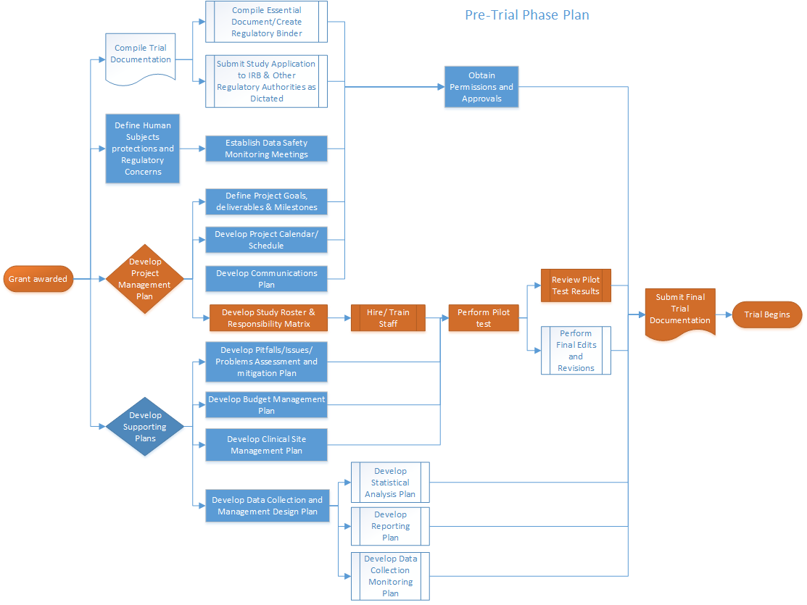

1 Introduction
1.1 Purpose of this Toolkit
This toolkit is a general guide for investigators and project staff at Hebrew SeniorLife Institute for Aging Research (HSL IFAR) conducting, managing or overseeing clinical trials in older populations. The toolkit is not intended be a comprehensive document. Rather it is meant to outline major considerations for all phases of a clinical trial. Suggested resources are provided for more detailed information ** you must consult and adhere to the latest federal, sponsor, institutional, state and regional regulations.**
Whenever possible, sections of this toolkit follow a similar outline: What, Why, How, Special Considerations for Aging Populations, Common Pitfalls, and Resources.
1.2 Are you Doing a Clinical Trial?
Below is the **National Institutes of Health (NIH)** definition of a clinical trial. As clinical trials are subject to additional oversight, a clear definition helps investigators ensure that they are meeting all of their obligations, and help funders ensure that the additional oversight is occurring when it is needed.
A research study1 in which one or more human subjects2 are prospectively assigned3 to one or more interventions4 (which may include placebo or other control) to evaluate the effects of those interventions on health-related biomedical or behavioral outcomes.5 ______________________________________________________________________
1See Common Rule definition of research at 45 CFR 46.102(d).
2See Common Rule definition of human subject at 45 CFR 46.102(f).
3Prospectively assigned refers to a pre-defined process (e.g., randomization) specified in a protocol that stipulates the assignment of research subjects (individually or in clusters) to one or more arms of a clinical trial.
4An intervention is defined as a manipulation of the subject or subject’s environment for the purpose of modifying one or more health-related biomedical or behavioral processes and/or endpoints. Examples include: drugs/small molecules/compounds; biologics; devices; procedures (e.g., surgical techniques); delivery systems (e.g., telemedicine); strategies to change health-related behavior (e.g., diet, cognitive therapy, exercise); treatment strategies; prevention strategies; and, diagnostic strategies.
5Health-related biomedical or behavioral outcome is defined as the pre-specified goal(s) or condition(s) that reflect the effect of one or more interventions on human subjects’ biomedical or behavioral status or quality of life. Examples include: positive or negative changes to physiological or biological parameters (e.g., improvement of lung capacity); positive or negative changes to psychological or neurodevelopmental parameters (e.g., mood management intervention for smokers; reading comprehension and /or information retention); positive or negative changes to disease processes; positive or negative changes to health-related behaviors; and, positive or negative changes to quality of life.
1.3 Clinical Trial Phases
Clinical trials are conducted in a series of steps, called phases - each phase is designed to answer a separate research question. These phases mostly apply to trials testing drugs or devices, rather than behavioral interventions.
Phase I: Researchers test a new drug or treatment in a small group of people for the first time to evaluate its safety, determine a safe dosage range, and identify side effects.
Phase II: The drug or treatment is given to a larger group of people to see if it is effective and to further evaluate its safety.
Phase III: The drug or treatment is given to large groups of people to confirm its effectiveness, monitor side effects, compare it to commonly used treatments, and collect information that will allow the drug or treatment to be used safely.
Phase IV: Studies are done after the drug or treatment has been marketed to gather information on the drug’s/treatment’s effect in various populations and any side effects associated with long-term use.
1.4 Training Requirements and Opportunities:
Aside from clinical trial design and/or biostatistical training, there are varied practical, short-term courses for principal investigators and project personnel to enhance the conduct and rigor of their clinical trials.
Good Clinical Practice (GCP) is an international quality standard that defines standards for clinical trials involving human subjects. The NIH require Certifications in Good Clinical Practice (GCP) for NIH-funded Investigators and clinical trial site staff who are responsible for the conduct, management and oversight of NIH-funded clinical trials. The FDA has a similar requirement.
There are many other extensive courses offered to become GCP certified, both internet-based and on-site. Most have a tuition cost. It is a good idea, if resources are available, for Project Directors leading clinical trials to receive GCP certification. Below are examples of a few of these many opportunities.
National Drug Abuse Treatment Clinical Trails Network (GCP) Course.
Online GCP.
Collaborative Institutional Training Initiative (CITI) GCP Course.
Harvard Catalyst Clinical Trial Design is an opportunity for new clinical investigators, who have an idea for development of a clinical trial, to participate in an intensive eight-week course. It is offered at no cost to members of the Harvard Catalyst community or other Clinical and Translational Science Award(CTSA) usually in May/June, with an application due in March. Participants learn the fundamentals of clinical trial design, including instructions on how to design a protocol, information on IRB and regulatory topics, and on trial implementation. Additional course topics include statistical analysis, budgeting, and data management.
NIH Clinical Research Training On-Line course is available 24/day at no cost with the following objectives: i. To raise awareness of the ethical issues involved in human subjects research; ii. To become familiar with the roles and responsibilities of the principal investigator and the institution when conducting clinical research in the NIH intramural research program; iii. To have an understanding of Food and Drug Administration (FDA) oversight of clinical research; and iv. To become familiar with how developments in science and health are reported by the media and how to work effectively with reporters.
Barnett International Design and Conduct of Clinical Trials: Design Requirements, Statistical Issues, and Clinical Protocols is an on-site two-day course that provides an introduction to the scientific, statistical, and ethical aspects of clinical trials research. Cost (2016) = $1800.
1.5 Clinical Trial Planning Resources
Numerous resources are available to researchers as they plan and proceed with their clinical trial.
- One such resources is The NIA Clinical Trial Toolbox: A resource for quality studies. This toolbox provides researchers with a central source of materials to develop and manage clinical trials. The site includes: templates, forms, guidelines and other related information that can be very helpful throughout the research process and is referenced throughout the ISAC toolkit.
2 Experimental Design and Statistical Considerations
2.1 Introduction
2.1.1 What
Experimental design encompasses features of a clinical trial that relate to its structure and operations.
2.1.2 Why
Careful planning and documentation of design of a clinical intervention study is critical for maintenance of rigor and the obtaining of results that are likely to be reproducible. These considerations are intimately connected to the trial’s appropriateness for formal statistical analysis and production of results. It is thus imperative that all aspects of design receive the highest level of scrutiny during the planning phase.
2.1.3 How
It is critical that aspects of design be tailored to the goals and specific aims of the trial. Below we delineate aspects of experimental and statistical design that should be considered. These are not to be considered comprehensive or as being equally applicable to all scenarios, but should provide a starting point in planning your study.
2.2 Design of the study
2.2.1 What
In this toolkit we consider explicitly randomized experiments conducted with human subjects, most typically clinical trials.
2.2.2 Why
Key design features will ultimately dictate the internal validity and generalizability of trial results.
2.2.3 How
The following items should be considered during the design phase.
- Rationale for conduct of the trial. The scientific / biomedical impetus necessitating conduct of the trial.
- Overall goal. What, specifically, the study is intended to accomplish. Investigators should note the degree to which the trial will be considered explanatory (that is, focused on estimation of pure causal effects of intervention under controlled circumstances) versus pragmatic (focused on choosing between therapeutic options, often under circumstances mimicing or derived directly from clinical experience.) Many studies will have both explanatory and pragmatic aims.
- Illness condition or state. The condition modification of which motivates the study.
- Sampling population. Individuals on whom sampling should focus, including explicit requirements for inclusion and factors that would preclude enrollment (exclusions).
- General approach to design. Determination of the general nature of the approach to determining intervention efficacy and safety. For instance, the trial may be intended to demonstrate superiority, noninferiority or equivalence of a novel intervention to standard care; to determine maximum tolerable dose of a particular agent in a given population; to demonstrate a dose-response relation between intervention dosing and endpoints; etc.
- Specific aims. Detailed aims addressable by evaluation of statistical hypotheses.
- Primary and secondary endpoints.
- General nature of the planned comparisons. Key features of the comparisons to be made; e.g. mean performance on a primary endpoint.
- Safety concerns. Risks, including loss of confidentiality, affiliated with intervention or trial activities. Note that these will be explicitly considered by Institutional Review Board in assessing the risk/benefit ratio of conduct of the trial.
- Ethical considerations. Additional safety of ethical considerations.
- Measurement and quantification of effects. The way in which treatment effects will be quantified.
- Determination of statistical significance of comparisons. Summary nature of quantitative comparisons, fleshed out in statistical analysis plan.
- Study staffing and environment.
- Leadership. Designation of membership and roles of investigative team leaders.
- Staffing. Designation of study staff, with specific delineation of responsibilities.
- Environment. Physical space in which the study will be conducted. Explicitly considers access and travel to and from the venue, as appropriate.
- Measurement. Detailed explication of the was in which measurements will be taken. Makes specific note of resource needs (for instance, whether images or biospecimens must be collected or stored, and the equipment, facilities and human resources necessray to obtain said measures.)
- Nature and administration of intervention. Specific detail on the intervention, including how, how frequently, and by whom it will be administered and monitored.
- Study intervention period. Length of time over which intervention would be administered, including run-in and washout periods as applicable.
- Frequency of participant interactions, data collection and endpoint measurement. Number and frequency of participant interactions and measurments; often displayed in tabular format.
- Participant allocation or randomization. Methods by which participants will be assigned to trial arms, e.g. by randomization. Detail on the specific procedures used to determine these assignments. Must consider factors (e.g. blocking or stratification) that affect this process.
- Masking / blinding. Determination of whether and how investigators, staff, participants, analysts etc. are aware of intervention assignments.
- Data collection and management. Detail on the physical systems for data capture, methods by which it will be captured, the persons performing entry, monitoring of data completeness and quality, etc (see Data Management Module).
- Statistical design and sample size. See below.
- Measurement of trial adherence. Methods by which completeness of planned participant interactions with randomized activities will be quantified, and plans for analysis, if any.
- Training. Provisions for training of study personnel, including human resources for providing the trainging.
2.2.4 Special considerations for older adults
The number of participants available and who would likely consent to be enrolled in trials can be difficult to estimate among older individuals, particularly in the context of numerous exclusionary factors.
2.2.5 Common pitfalls
Lack of specificity in describing intervention; insufficient attention to the potential for attrition, data missingness, or intervention non-adherence; lack of detail in considering manner by which participants may be contacted, recruited, and maintained in the trial.
2.2.6 Resources
2.3 General Statistical Considerations
2.3.1 What
The statistical design works hand-in-hand with the experimental design to establish procedures for data interpretation and analysis. Major considerations include planning the enrollment and sample size, the general analytic approach, a priori consideration of the way in which results will be interpreted, and plans to resolve expected and unexpected problems, including data missingness and untoward measurements.
2.3.2 Why
Appropriate sample size and a statistical analysis plan are critical for the validity of conclusions and to prevent bias in operations and conclusions.
2.3.3 How
Derivation of the statistical analysis plan is detailed in the sections below.
2.4 Statistical Analysis Plan (SAP)
2.4.1 What
The project Statistical Analysis Plan (SAP) provides detailed descriptions of statistical analyses to be conducted for the trial, including rationale for choice of methods, plans for dealing with unexpected difficulties, and pre-specified guidance on interpretation of results.
2.4.2 Why
Guidance on data ascertainment, management, storage, analysis and interpretation are critical to preserve the validity of the design and soundness of scientific conclusions.
2.4.3 How
A version of the SAP may be included as an addendum to or embedded within the study protocol and manual of procedures, but ideally the authoritative SAP should be an independent document with its own formatting, references etc. The SAP must be assembled prior to enrollment and approved by the appropriate parties including the trial statistician, investigative team, and regulatory authorities (e.g. DSMB), and may be included with the package submitted to Institutional Review Boards or equivalent overseeing ethical approval of the trial. Authorship should be by the project statistician, assisted by the investigative team. As with all trials documents, the SAP should be under strict version control, and a ‘living’ electronic date-stamped version considered the authoritative document (see Essential Documentations Module).
2.4.3.1 Contents of the document
The contents of the SAP will vary from trial to trial. For a conventional intervention trial designed to assess efficacy, in which participants are allocated to one of two or more groups (e.g. intervention vs. control), contents might be as follows.
- Introduction.
- Background. Provides explanatory information concerning disease target, patient population, etc. Includes references to authoritative literature.
- Objectives. Briefly describes overall analytic goals.
- Primary objective. Describes primary objective of the trial, being specific concerning such matters as demonstration of feasibility; efficacy / effectiveness; safety. Provides some clarity concerning expected treatment effects and public health relevance.
- Secondary objectives. As above, for secondary objectives.
- Endpoints.
- Primary endpoints. Describes primary and secondary endpoints. May give detail as to measurement, validity and reliability, and other performance characteristics.
- Secondary endpoints. As above, for secondary endpoints.
- Protocol / Grant SAP. Summarize existing plan as presented in the original protocol or funding application.
- Design elements.
- Basic design features. Discusses overall experimental structure for purposes of comparison.
- Nature of primary comparison. Describes the basic target of interest, i.e. determination of superiority, equivalence or noninferiority of intervention to control or current standard of care.
- Participant allocation. Describes randomization or other procedures by which participants are allocated to trial groups.
- Schedule of events. Gives a summary of time-points and measurements that will be used.
- Blinding. Describes the degree to which data scientists and personnel are blinded, and maintenance of same.
- Blocking and stratification / matching. Describes blocking, matching, etc. and references plans for consideration of design effects in analysis.
- Randomization Scheme. Describes the randomization scheme and procedures.
- Intended Sample Size. Describes the intended final sample size, referencing potential hurdles such as attrition, crossover, non-adherence and other sources of bias.
- Effects intended to be estimated. Describes inferential targets for the analysis.
- Bounds for determination of statistical significance. Gives clinical and statistical thresholds for determination of significance of evidence and, where appropriate, rejection of null hypotheses.
- Argument for clinical significance. Establishes clinical relevance of effect to be estimated, potentially using the minimum clinically important difference or similar construct.
- A priori determination of interpretation of results.
- Basic design features. Discusses overall experimental structure for purposes of comparison.
- Analysis Populations / datasets. Describes analysis populations.
- Full analysis dataset. Typically all enrolled participants.
- Intention-to-treat dataset. Typically all participants allocated to trial groups. Meant to simulate the effect of real-world deployment of intervention.
- Per-protocol dataset. Typically participants meeting some bound on adherence to trial procedures. Meant to assess causal effect of intervention under adherent conditions.
- Detailed Analytic Plan. Presents the detailed project analytic plan. Where appropriate this may be organized by specific aim or project objectives.
- Primary endpoint(s). Describe primary, supporting and exploratory analyses intended for the Primary Endpoint.
- Main analysis of primary endpoint(s). Describes controlling, primary treatment of main analysis.
- Supportive analysis of primary endpoint(s). Describes secondary, supporting version of main analysis.
- Exploratory analysis of primary endpoint(s). Describes additional, perhaps hypothesis-generating analyses, sensitivity assessments, etc.
- Secondary endpoint(s). Describe primary, supporting and exploratory analyses intended for the Secondary Endpoints.
- Main analysis of secondary endpoint(s). As above, for secondary endpoints.
- Supportive analysis of secondary endpoint(s). As above, for secondary endpoints.
- Exploratory analysis of secondary endpoint(s). As above, for secondary endpoints.
- Safety analysis. Present plan for analyses of safety signals. Refer to relevant guidance.
- Exposure to intervention and trial procedures.
- Adverse events.
- Deaths and Serious Adverse Events.
- Other safety parameters.
- Interim analysis. Describe the rationale for and operationalization of planned interim analysis. Pay particular attention to the objective – e.g. stopping for futility, demonstrated efficacy, etc.
- Reasons for interim analysis. Briefly provide rationale.
- Objective of the interim analysis. Describe the objectives of the interim look.
- Planned schedule of interim analysis. Provides the schedule and criteria by which this may be revised.
- Scope of potential adaptations. Describes ways in which the design may be altered as a result of the interim analysis.
- Stopping rule. Provides the threshold, if any, of evidence that may result in early cessation of the trial for futility and/or for early demonstration of efficacy or other reasons.
- Adjustments to confidence intervals and p-values. Describes the method by which interim analyses will be acknowledged in subsequent data presentations, including management of type-I error rates and related quantities.
- Sample-size re-estimation and conditional power. Describes procedures for re-estimation and summary of conditional power computations.
- Documentation of interim analysis results. Provides template for presentation of results.
- Primary endpoint(s). Describe primary, supporting and exploratory analyses intended for the Primary Endpoint.
- Other methodological aspects.
- Special considerations in measurement. Here or elsewhere, addresses considerations such as measurement error, technical considerations concerning, for instance, biomarker or imaging analysis, and other specialized considerations.
- Quantification of adherence. Considers whether adherence to trial procedures should be assessed and analyzed, and if so provides the relevant planning.
- Covariates and subgroups. Gives descriptions of covariates and subgroups to be considered.
- Handling of missing data. Describes effect of attrition and other mechanisms dealing with missingness, and analytic plans to take this into account.
- Handling of outliers and unresolved queries. Describes approaches to dealing with untoward values or unexplained observations. May consider sensitivity analysis or other approaches; should be very specific and explicit.
- Multiplicity adjustments. Describes plans, if any, to deal with multiple comparisons issues.
- Other considerations.
- Reporting conventions. Describes manner in which results will be communicated; may include detailed instructions on units, significant digits and rounding, etc.
2.4.4 Special considerations for older adults
Aging populations are subject to a number of factors that may induce bias or difficulty in analysis, including enhanced risk of attrition or competing risks, elevated prevalence of multimorbidity, difficulties with participant recall, and other factors [cite Van Ness et al]. These and related considerations must be carefully considered within the SAP and during analysis.
2.4.5 Common pitfalls
Lack of specificity in describing techniques to be used and controlling decisions. Examples: failure to specify method by which standard errors are to be computed (model-based vs. robust. vs. resampling-based methods), failure to specify the set of covariates to be used in the definitive analysis (or method by which that set of covariates will be derived).
2.4.6 Resources
2.5 Presentation of Pre-planned Statistical Analyses
2.5.1 What
Presentation of statistical analyses to collaborators within the trial can range from casual exploratory communications to formal presentation of results as described in the SAP. In general, formal inference should follow the pre-specified plan laid out in the SAP, with particular attention to maintenance of blinding and the potential for introduction of bias, and investigators should consult regulations and guidance as to the degree to which discussion of preliminary analyses by the investigative team are appropriate. Formal presentation of results should follow an established template consistent with the SAP and include critical elements as outlined below.
2.5.2 Why
Protection against confirmation bias and other hazards is critical for the maintenance of rigor and validity of conclusions. Following the agreed-upon template for analyses (as documented in the SAP) provides this protection.
2.5.3 How
Analyses should be presented in memoranda constructed in a reproducible fashion, with carefully managed version control and documentation of data sources and other items as described below. Authorship should be a collaboration between the study statistician and other members of the analytic team, and must have as a contributor the persons actually performing the analysis.
2.5.3.1 Contents of the document
Some critical items for inclusion are described below
- Introduction and objectives. Brief background for the proposed analysis, with particular attention to measurement or design issues relevant to the presentation of results.
- Data Sources. Describes the studies and data set/s used. Must specify the version of the data structures (i.e. the date upon which the dataset was frozen and/or transmitted to the analyst.
- Software and computing environment. Describes the analytic tools and machinery employed, including version numbers.
- Aims and Analysis Objectives. Briefly states the aims and hypothesis of the analysis. Includes a brief prose summary how each aim was addressed in the analyses.
- Methods. Describes analytic sample and methods employed.
- Analytic samples and timeframe. Defines samples used. Specifies any subgroups to be used in analysis. Specifies the analysis timeframe (i.e. which visits or measurements were incorporated in analysis).
- Outcome measures. Specifies the primary and secondary outcomes used in the analysis. If outcomes are derived, provides clear definitions in natural language. Specifies the timepoints at which measures were obtained if not obvious from text above.
- Control Variables. Lists covariates used in the analyses. Where variables were derived, provide clear definitions. Specifies the timepoints at which measures were obtained, if not obvious from above.
- Statistical Procedures. Provides the types of statistical methods/models used as well as any statistical tests performed specific to each analytic aim identified above. Identifies primary, supporting and exploratory analyses (see Section XXX).
- Sensitivity Analysis. Describes and justifies any sensitivity analyses, i.e. using different samples, covariates, methods/models, etc.
- Treatment of missing data. Describes methods by which missing data are acknowledged and/or taken into account.
- Deviations from SAP or secondary analytic plan. Describes and justifies any variation in approach from that previously planned.
- Presentation of Results. Formal presentation of results. Should track closely with SAP or secondary analytic plan as well as the sections described in Methods (above).
- Conclusions. Provides in prose the overall implications of the analysis, with high-level quantitative summaries as appropriate.
2.5.4 Special considerations for older adults
See Special considerations for older adults under the Statistical Analysis Plan section.
2.5.5 Common pitfalls
Failure to acknowledge data sources or describe methods with sufficient detail; failure to conduct and document conclusions in reproducible fashion.
2.5.6 Resources
2.6 Planning, Conduct and Presentation of Secondary Analyses
Following or in parallel to completion of pre-planned analyses, secondary analyses may be requested or conducted. It is recommended that the trial employ a template for request and design of these analyses that mirrors the structure of the report described in the Contents of the document section.
2.7 References
1Van Ness, P.H., V.R. Towle, and M. Juthani-Mehta (2007) Testing Measurement Reliability in Older Populations: Methods for Informed Discrimination in Instrument Selection and Application. Journal of Aging and Health (20) 2: 183-197. DOI: 10.1177/0898264307310448.
Van Ness, P.H., T. E. Murphy, and A. Ali (2016) Attention to Individuals: Mixed Methods for N-of-1 Health Care Interventions.
Journal of Mixed Methods Research DOI: 10.1177/1558689815623685.
3 Human Subject Protection and Research Regulation
3.1 Introduction
3.1.1 Module Goal
The goal for this module is to introduce the essential elements of human subjects’ protections and regulatory requirements pertinent to the conduct of clinical trials. Essential aspects of human subjects’ protections and regulatory requirements provided in this module include:
- Institutional Review Boards.
- Health Insurance Portability and Accountability Act (HIPAA).
- Data Use Agreements (DUA).
- ClinicalTrials Registration.
- Data Safety Monitoring.
- Informed Consent.
- Adverse Event Monitoring and Reporting.
3.1.2 General Considerations About Federal Regulations
The regulation of clinical trials can be complex. What may be seen by investigators as trivial regulations or minor misdemeanors can have serious consequences for the individual investigator, their institutions, sponsors, and trial subjects. Therefore, it is wise to be over-cautious and anticipate problems before they arise. As regulatory issues can play a critical role in your trial design, it is strongly advised to consider these issues from the very start of project planning (e.g. grant preparation) by consulting with your Institutional Review Board (IRB), and making sure you understand existing regulations and institutional policies.
Federal agencies including the U.S. Food and Drug Administration (FDA) and the Department of Health and Human Services (HHS), which includes National Institutes of Health (NIH), make and enforce regulations to ensure the safety of participants in clinical trials, and retain final authority for determining whether an institution has been compliant. Investigators should review the specific regulations of the funding or over-seeing agency and confer with the IRB to determine whether additional regulations or policies apply. The investigator must keep in mind that when more than one regulation, guidance, or policy applies the most stringent must be followed.
HHS regulated trials (includes NIH): HHS requirements for federally funded human subjects’ research is codified in 45 CFR Part 46 “Protection of Human Subjects”. This set of regulations are based on the Belmont Report.
FDA Regulated Trials: The FDA has their own set of human subject regulations and regulations CFR – Code of Federal Regulations Title 21 governing IRB activities, which goes beyond the scope of this module. A key initial step is to determine whether or not your trial falls under the regulatory jurisdiction of the FDA which generally oversees drug and device trials. For more information check FDA regulations.
Office of Human Research Protections (OHRP): The OHRP is the federal body responsible for compliance monitoring. Under Title IV of the Public Health Service Act (42 USC 281 et seq.), OHRP has the authority to investigate complaints about human subject protections in HHS-funded research, or other research covered by the institution’s Assurance of Compliance. For general regulatory issues, particularly for federally funded trials, refer to the OHRP website.
International Conference on Harmonization (ICH) Good Clinical Practice (GCP): While federal regulations provide the standards by which human subjects research is to be conducted, guidance documents and institutional policies add specificity and provide direction on how to apply regulatory requirements. One such guidance is the ICH GCP guidance. Compliance with the ICH GCP assures that the rights and well-being of trial subjects are protected and that the clinical trial data are credible.
3.1.3 Resources
- Code of Federal Regulations, Title 45 Part 46,http://www.hhs.gov/ohrp/regulations-and-policy/regulations/45-cfr-46/
- Belmont Report, http://www.hhs.gov/ohrp/regulations-and-policy/belmont-report/
- International Conference on Harmonization (ICH) guidelines for Clinical Good Practice (GCP), http://www.ich.org/products/guidelines/efficacy/article/efficacy-guidelines.html
- OHRP, http://www.hhs.gov/ohrp/
- US Food and Drug Administration regulations, http://www.fda.gov/ScienceResearch/SpecialTopics/RunningClinicalTrials/ucm155713.htm
3.2 Institutional Review Board (IRB)
3.2.1 What
An Institutional Review Board (IRB) is an appropriately constituted group formally designated to review, approve and monitor research involving human subjects to ensure it is conducted in accordance with applicable federal regulations, institutional policies, and ethical guidelines.
While all IRBs are responsible to adhere to the same regulations as defined by OHRP, each IRB is required to have its own institutional policies and operates differently. It is critical to understand the requirements of the IRB overseeing your project. Specific information relevant to HSL IRB can be found on the IRB section of the HSL website as well as the internal HSL “HUB”.
3.2.1.1 Categories of IRB oversight
Depending on the study design and degree to which human subjects are involved, the IRB will review the research and will make a determination on the appropriate review level. The basic levels of review include:
- Exempt (determination by IRB Chair or her designee).
- Expedited (review/approval by IRB Chair or her designee).
Full Board (review/approval by the convened IRB) Most clinical trials will require full IRB review.
3.2.1.2 IRB applications and reviews
IRB applications include:
- Initial application.
- Annual/continuing review.
- Amendments/modifications to the protocol or study materials.
- Incident reports for:
- Unanticipated problems.
- Non-Compliance.
3.2.1.2.1 Initial review of research application
All human subjects’ research must be reviewed and approved by an IRB before human subjects activities can begin. This includes recruitment efforts, and receiving or collecting data. Per Federal and Institutional policy, no funds for research involving human subjects activities will be released until the appropriate IRB approval has been secured.
3.2.1.2.2 Annual/Continuing review
Investigators must receive continuing approval of their research at least annually. On some occasions, more frequent review may be required by the IRB. Continuing approval is required until all activities with human subjects are complete (this includes access to data with participant identifiers or with codes that can be linked back to research participants).
3.2.1.2.3 Amendment submissions
Investigators must submit all changes to the research or research materials and receive IRB approval for those changes prior to implementation (except when necessary to eliminate apparent immediate hazards to research participants).
3.2.2 Why
The IRB assures that a clinical trial is in compliance with federal and state regulations, institutional policies, and accepted ethical guidelines, to protect the rights and welfare of research subjects.
3.2.3 How
3.2.3.1 IRB review for single site trials
The procedures for IRB review differ by institution but have common main elements. It is wise before you embark on your IRB application to consult with the IRB office to review the general study design and anticipate key review considerations.
The HSL IFAR IRB uses an electronic submissions system (Cayuse). Forms are templated and will guide you through the required elements. Application submissions must meet deadlines stipulated in the HSL IFAR IRB Standard Operating Procedures.
3.2.3.2 IRB review for multi-site trials
Many clinical trials involve multiple sites and/or investigators from multiple institutions. Many clinical trials involve multiple sites that are clearly engaged in human subjects’ research (i.e., site personnel are recruiting subjects, implementing an intervention, or collecting data). Regulatory oversight of these trials can be done either by:
- Single IRB review (one IRB reviews the research, and the other IRBs rely on the reviewing IRB).
- Multiple IRB reviews (e.g. each institution conducts its own IRB review/approval).
In June 2016, the NIH established a policy effective May 25, 2017, requiring a single IRB for all NIH-funded multisite studies, with only rare exceptions.
IRBs of engaged sites and investigators may cede oversight responsibility to the IRB reviewing the research (also referred to as the IRB of record). Relying on an external IRB, or ceded review, is documented with a formal agreement between the reviewing and relying site IRBs and must be signed by an Institutional Official. Note: If you are conducting research with Harvard affiliates, you may rely on the Harvard Catalyst Reliance Agreement, rather than an IRB Authorization Agreement. See the HSL IRB office for more information.
Some study sites engaging in human subjects’ research (e.g., community nursing homes) may not be associated with an IRB. In this case the reviewing IRB may agree to provide IRB oversight for the external site through a formalized agreement (Individual Investigator Agreement) between the two parties. Alternatively, a commercial IRB may be engaged in a contract to provide oversight for that external site. Sites that receive direct federal awards for research purposes may also need a FederalWide Assurances. These determinations will be made by the prime IRB responsible for the trial.
3.2.4 Special Considerations for Older Subjects
There are two special considerations for special protections governing research with elderly subjects: cognitive impairment and institutionalization. Under those conditions, a number of issues must be taken into consideration. See OHRPs related guidance and HSL IRB’s Standard Operating Procedures (SOPs). See also Informed Consent related to the decision making capacity.
3.2.5 Common Pitfalls
- Not seeking IRB guidance in the process of trial design and well in advance of your planned start date.
- Underestimating the time it takes to get IRB approval.
- Underestimating regulatory requirements. Failure to meet requirements could lead to serious consequences for yourself and your institution. Be overly cautious and always report anything of potential concern to your IRB.
- Flippant or casual comments about human subjects’ or regulatory issues about your trial via emails or text. If a problem occurs, all related communication may be become eventually become relevant.
3.2.6 Resources
External
- HHS OHRP Regulations and Policy, http://www.hhs.gov/ohrp/regulations-and-policy/guidance/index.html
- NIH Policy on the Use of a Single IRB for Multi-site Research, http://grants.nih.gov/grants/guide/notice-files/NOT-OD-16-094.html
- U.S. Food and Drug Administration (FDA), http://www.fda.gov/ScienceResearch/SpecialTopics/RunningClinicalTrials/
Internal
- HSL IRB, http://www.instituteforagingresearch.org/resources/research-administration/institutional-review-board
- HSL “HUB”, http://thehslhub/Departments/Roslindale/HSL-IFAR/Institutional-Review-Board
- HSL IFAR IRB Standard Operating Procedures, (http://thehslhub/~/media/HSLNet/Docs/IFAR/IRB/IRB_SOP.ashx)
3.3 The Health Insurance Portability and Accountability Act (HIPAA)
3.3.1 What
The HIPAA, enacted through the Privacy Rule, establishes national standards for the protection of protected health information (PHI). The rule establishes conditions under which PHI may be used by covered entities1, including for research2 purposes. With regards to research, the Privacy Rule also defines the means by which individuals should be informed of uses of their medical information for research purposes, and their rights to access information about them held by covered entities.
1Covered entities: health plans, health care clearinghouses and health care providers who transmit any health information in connection with transactions for which HHS has adopted standards.
2Research: Defined in the Privacy Rule “a systematic investigation, including research development, testing, and evaluation, designed to develop or contribute to generalizable knowledge.”
3.3.2 Why
The Privacy Rule protects the privacy of individually identifiable health information, while at the same time ensuring that researchers have access to medical information necessary to conduct vital research.
3.3.3 How
The Privacy Rule builds upon the protections provided to human subjects in the Common Rule (45 CFR Part 46, Subpart A), and/or the Food and Drug Administration’s (FDA) human subject protection regulations (21 CFR Parts 50 and 56). There are three main areas for researchers to consider.
3.3.3.1 Screening patients for recruitment
Selection of subjects for a clinical trial often requires identifying patients with specific characteristics (e.g., a diagnosis) from a large patient population using data considered PHI. To facilitate such efforts, covered entities are permitted to use and disclose PHI for research purposes pursuant to a waiver of authorization by an IRB or Privacy Board. At HSL, the IRB also serves as the Privacy Board.
3.3.3.2 Inclusion of HIPAA assurances in informed consent forms
When PHI is being used in a research study, the consent form must include core elements and essential language for authorization of use of PHI as defined by the Privacy Rule (see Privacy Rule, 45 C.F.R. §164.508(c)(1)). At HSL, the required language is included in the Informed Consent Template available in the online IRB application system Cayuse. Investigators should not alter these templates without consulting the IRB.
3.3.3.3 Handling of PHI throughout the trial
A core tenant of HIPAA and the use of PHI is to use the minimum necessary information in order to maintain and protect patient privacy. As such, clinical trials must be designed and conducted to minimize unnecessary data collection and maximize subject confidentiality. Whenever possible, information obtained from patients or their medical records should be collected without identifiers. When identifiable data is collected, the protocol must be designed to maintain confidentiality of identifiable data, and data security measures appropriate to the degree of risk from disclosure.
A complete summary of key elements of the Privacy Rule including who is covered, what information is protected, and how PHI can be used and disclosed is presented in the “Summary of the HIPAA Privacy Rule. HSL-specific policies regarding HIPAA, and the use of PHI in research can be found in the HSL IRB SOP.
3.3.4 Special considerations for older subjects
NONE
3.3.5 Common Pitfalls
- Inadequate protection PHI (e.g., transporting patient files with identifiers in an unsecure manner, unencrypted laptops or databases that contain PHI etc).
3.3.6 Resources
- Regulatory/Policy, Food and Drug Administration’s (FDA) human subject protection regulations (21 CFR Parts 50 and 56),http://osp.od.nih.gov/office-clinical-research-and-bioethics-policy/clinical-research-policy/research-involving-human-subjects
- HHS Code of Federal Regulations HIPAA for Professionals, http://www.hhs.gov/hipaa/for-professionals/special-topics/research/index.html
- HHS Summary of the HIPAA Privacy Rule, http://www.hhs.gov/hipaa/for-professionals/privacy/laws-regulations/index.html
- HHS Protecting Person Health Information in Research: Understanding HIPAA Privacy Rule, https://privacyruleandresearch.nih.gov/pdf/HIPAA_Privacy_Rule_Booklet.pdf
- HHS NIH, HIPAA Authorization for Research, https://privacyruleandresearch.nih.gov/authorization.asp.
- Common Rule (45 CFR Part 46, Subpart A), http://www.hhs.gov/ohrp/regulations-and-policy/regulations/common-rule/
Internal
3.4 Data Use Agreements (DUA)
3.4.1 What
A data use agreement (DUA) is a contractual agreement required under the Privacy Rule between a HIPAA covered entity (e.g., HSL) and a third party who wishes to obtain PHI with limited identifiers, referred to as a Limited Data Set (LDS). DUAs address issues such as limitations on use of the data, obligations to safeguard the data, liability for harm arising from the use of the data, publication, and privacy rights that are associated with transfers of confidential or protected data. Refer to HIPAA, Section 45 CFR part 160 Subparts A and E of Part 164 for details. A common example of a study that requires a DUA, is one that utilizes Medicare data for which a DUA must be set up with the Centers for Medicare and Medicaid. See resources below for guidance.
3.4.2 Why
In addition to the requirements set forth in the Privacy Rule, a DUA clearly establishes the rules and expectations related to provision and use of data by the involved parties (provider and recipient). DUA must be entered into before there is any use or disclosure of a limited data set to an outside institution or party.
3.4.3 How
The content, format, and processes of establishing DUAs differ depending on the entities involved. Investigators must use approved DUA frameworks at these entities and their institutions. HSL IFAR policies related to DUAs can be found on the HUB.
3.4.4 Special considerations for older subjects
NONE
3.4.5 Common Pitfalls
- Not realizing a DUA is needed.
- Being unaware the time required to process a DUA, especially with CMS.
- Being unaware the cost required to use data from certain entities, especially CMS.
- Narrowly written DUAs which do not account for the possibility of future analytic plans.
3.4.6 Resources
External
- Academy Health, Privacy Tools: Guidance on HIPAA Data Use Agreements, http://www.hsrmethods.org/PrivacyInResearch/Privacy%20Tools/Guidance%20on%20HIPAA%20Data%20Use%20Agreements.aspx
- CMS.gov DUAs, https://www.cms.gov/Research-Statistics-Data-and-Systems/Computer-Data-and-Systems/Privacy/DUAs.html
- HHS CMS DUA, Agreement for use of Centers for Medicare and Medicaid Services (CMS) Data containing individual identifiers, https://www.cms.gov/Medicare/Medicare-Fee-for-Service-Payment/sharedsavingsprogram/Downloads/Data-Use-Agreement.pdf
- HHS NIH, How can Covered Entities Use and Disclose Protected Health Information for Research and Comply with the Privacy Rule?, https://privacyruleandresearch.nih.gov/pr_08.asp
- HHS Practice Guide Data Use Agreement, http://www.hhs.gov/ocio/eplc/EPLC%20Archive%20Documents/55-Data%20Use%20Agreement%20(DUA)/eplc_dua_practices_guide.pdf
- Research Data Assistance Center, Tips for completing the Data Use Agreement with Addendum, http://www.resdac.org/resconnect/articles/154
Internal
- Hebrew Senior Life, Creation, Use, Disclosure and Receipt of Limited Data Sets and Data Use Agreements doc, http://thehslhub/~/media/HSLNet/P_P/IFAR/IFARPPCMS.ashx
3.5 Clinical Trial Registration
3.5.1 What
ClinicalTrials.gov is an on-line public registry of clinical trials maintained by the U.S. National Institutes of Health (NIH) and National Library of Medicine. It was launched in 2000 and expanded by the Federal Drug Administration Amendment Act (FDAAA 801) in 2007 and is endorsed by the International Committee of Medical Journal Editors (ICMJE).
3.5.1.1 Which trials must be registered?
It is strongly recommended that ALL clinical trials are registered on ClinicalTrials.gov. By law, only trials that meet the FDAAA 801 definition of an “applicable clinical trial” must be registered which generally include interventional studies (with one or more arms) of FDA-regulated drugs, biological products, or devices. However, in 2014, the NIH proposed expanding clinicaltrials.gov registration requirements to include all NIH-funded clinical trials. Thus, even clinical trials in which the intervention is a behavior modification or clinical education program merits registration on ClinicalTrials.org. It is strongly recommended that ALL clinical trials are registered on ClinicalTrials.gov.
3.5.2 Why
There are numerous reasons for registering a trial. Refer to [Clinicaltrials.gov]((https://clinicaltrials.gov/ct2/manage-recs/background) for elaboration.
3.5.2.1 Required by Law
Section 801 of the Food and Drug Administration Amendments Act (FDAAA 801) requires Responsible Parties to register and submit summary results of clinical trials with ClinicalTrials.gov. The law applies to certain clinical trials of drugs (including biological products) and medical devices.
3.5.2.2 Required for Journal Publication
The International Committee of Medical Journal Editors (ICMJE) requires trial registration as a condition of the publication of research results generated by a clinical trial. ClinicalTrials.gov is a registry where organizations and individuals can provide the World Health Organization (WHO) Trial Registration Data Set required by ICMJE. Top tier journals will scrutinize the registration of your trial on ClinicalTrials.gov and make sure that is aligns with the description provided in your paper. Most journals have a strict requirement that your trial be registered no more within 21 days after enrollment of the first participant and will reject your paper it is this is not the case.
3.5.3 How
Trial registry is done on the ClinicalTrials.gov. Protocol Registration and Results System (PRS). The PI (and in some circumstances, a lead person on the study team) should be assigned as the Responsible Party charged with initiating and maintaining the registration. Once submitted by the PI, institutional administrators (the HSL IRB Director at IFAR) are notified of the submission and must verify the information in the registration (including changes and updates to the study) and approve and release it before it is sent to administrators at ClinicalTrials.gov for review and eventual posting.
3.5.3.1 Initial submission
The clinical trial must be registered no later than 21 days after enrollment of the first participant. Note this rule is strictly enforced by major journals. If initial registration is not done within this timeframe, the trial results will be disqualified from consideration for publication. The application and direction are online at ClinicalTrials.gov.
3.5.3.2 Registration Updates
Responsible Parties should update their records within 30 days of a change to any of the following:
- Recruitment Status and Overall Recruitment Status data elements.
- Completion Date.
- Outcomes Definitions.
- Other changes or updates to the record must be made at least every 12 months.
3.5.3.3 Submitting Results
The Responsible Party MUST submit summary results no later than 12 months after the Completion Date, defined in as the date of final data collection for the pre-specified “primary outcome measure” (see Primary Completion Date data element on ClinicalTrials.gov). Scientific information is submitted as four separate modules: Participant Flow, Baseline Characteristics, Outcome Measures and Statistical Analyses, and Adverse Events.
3.5.4 Special considerations for older subjects
NONE
3.5.5 Common Pitfalls
- Failing to register the trial.
- Failing to register the trial within a 21 days of enrolling the first participant.
- Failing to maintain and update trial registration details.
- Failing submit results.
3.5.6 Resources
- ClinicalTrials.gov, https://grants.nih.gov/ClinicalTrials_fdaaa/docs/registration_flow_chart.pdf
- World Health Organization (WHO), http://www.who.int/about/en/
3.6 Data Safety Monitoring
3.6.1 What
Funding agencies require that the safety of trial participants and integrity of data are ensured through systems of research oversight and monitoring. The type and level of monitoring required depends on the risk, nature, size and complexity of the clinical trial. It can be as simple as basic monitoring by the PI, an independent safety officer or medical monitor, or an NIH officer, or as complex as a full independent Data Safety Monitoring Board (DSMB). The decision about the level of data safety monitoring required for your study is ordinarily determined by the sponsor (i.e., NIH), but it may also be required by the IRB. The remainder of this module assumes your trial requires full DSMB.
The DSMB is a formally appointed independent group, consisting of at least three (3) voting members external to the research that typically include experts in the relevant field of study, statistics, and study design. The clinical trial PI(s) and lead statistician also typically participate as internal members on the DSMB.
The DSMB conducts interim monitoring of accumulating data from research activities to assure the continuing safety of human subjects, relevance of the study question, appropriateness of the study, and integrity of the accumulating data.
3.6.2 Why
The purpose of a DSMB is to ensure the safety of human subjects, relevance of the study question, appropriateness of the study, and integrity of the accumulating data. Additionally, the DSMB attempts to identify threats to credibility or the validity of the study related to slow rates of accrual, high rates of ineligibility after randomization, high rates of protocol violations, and unexpectedly high dropout rates.
The primary responsibilities of the DSMB are:
- Periodic review and evaluation of the accumulated study data for participant safety, study conduct and progress, and, when appropriate, efficacy.
- Provision of written documentation confirming review of the protocol and agreement with the study design and the data safety monitoring plan (DSMP).
- Make recommendations to study sponsor concerning the continuation, modification, unmasking or termination of the trial.
- Provide a written report to the IRB which summarizes oversight activities and recommendations, and any concerns regarding subject safety.
3.6.3 How
There are four basic steps in establishing a trial’s Data Safety Monitoring system:
3.6.3.1 Establish a Data Safety Monitoring Plan (DSMP)
The PI should create a Data Safety Monitoring Plan (DSMP) that is appropriate for the type and expected risks of the research. The DSMP must be included with the protocol in the initial submission to the IRB. Templates of DSMPs are available on the NIH website. DSMPs generally include the following elements:
- Data or events to be captured under the monitoring provisions (e.g., unanticipated problems and adverse events).
- The entity responsible (e.g., investigators, sponsor, a coordinating or statistical center, an independent monitor, DSMB) for monitoring the data collected and the time frames for reporting.
- The frequency of assessments of data or events captured by the monitoring provisions.
- Definition of specific triggers or stopping rules that dictate when action is required.
- Procedures for communicating to the IRB(s), the study sponsor, the investigator(s), and other appropriate officials the outcome of the reviews by the monitoring entity.
3.6.3.2 Establish the DSMB membership
For NIH-funded studies, the Program Official (PO) holds primary responsibility for the formation of the DSMB and selecting the external members unless otherwise specified in the Terms of Award. External DSMB members should not have direct involvement in the conduct of the study or any financial, proprietary, professional, or other interests that may affect their impartiality. Study investigators should have opportunity to review the proposed members before the candidate’s interest and availability are confirmed.
Once the group has been formed, the PO will select the DSMB Chair. All external DSMB must sign a Conflict of Interest certification that should be kept in the Essential Documents binder. Each IRB should be informed of the membership and operating procedures.
3.6.3.3 Create DSMB Charter
Before the trial begins a DSMB charter must be prepared that details the roles and responsibilities of the DSMB. The charter is usually drafted by the PO and subject to approval by PIs and DSMB members (see DSMB/DSAC Charter in the Essential Documents Module that details the contents of the DSMB Charter). The DSMB Charter should be maintained in the Essential Documents binder.
3.6.3.4 Create DSMB Report Templates and Meeting Documentation
The next step is for the research team to work with the DSMB members to create templates for the Open and Closed Sessions of the DSMB meetings. Templates for these reports are described in the Data Safety and Monitoring Documents section of the Essential Documentations Module. Finally, a system to maintain agendas and minutes from the DSMB meetings should be established. All DSMB reports, agendas and minutes must be maintained in the Essential Documents binder.
3.6.3.5 Establish Meeting Schedule and Structure
Prior to the start of the trial, the DSMB should convene as many times as needed to review the protocol and approve all data safety monitoring protocols, templates of essential documents, and processes for conducting the business of the DSMB (e.g., schedule, voting rules, minutes, definition of a quorum).
Unless otherwise determined, the PO is responsible for convening meetings, and coordinating the distribution of materials to DSMB members and other meeting participants prior to the meeting. The agenda for each meeting is generally developed jointly by the PO, the PI (s) (regardless of whether a contract, cooperative agreement, or grant), the study statistician, and DSMB Chair. These details of these responsibilities should be agreed upon by the PO and PI (s).
Once a study has started, most DSMBs meet every 6 months, but at least annually. Additional DSMB meetings may be requested by DSMB members, the PO, collaborators, IRB, or PI at any time and up to the discretion of the PO and DSMB Chair.
Meetings may be held by telephone, videoconferences or in-person In the event a DSMB member cannot attend a meeting, he/she may receive a copy of the closed session DSMB report (see below) and either participate by conference call or provide written comments to the DSMB Chair for consideration at the meeting.
3.6.3.5.1 DSMB Meeting Format
The recommended meeting format consists of three sessions: Open Session, Closed Session, and Closed Executive Session.
A. Open Session (see NIH [Clinical Research Study Investigator’s Toolbox] (https://www.nia.nih.gov/research/dgcg/clinical-research-study-investigators-toolbox/data-and-safety-monitoring) for report template). This session is generally attended by the PI (s), project statistician, external DSMB members, and the PO. The opens session basically involves a complete review and discussion of all the elements in the open session report presented in the aggregate for both arms of the study.
B. Closed Session (see NIH [Clinical Research Study Investigator’s Toolbox] (https://www.nia.nih.gov/research/dgcg/clinical-research-study-investigators-toolbox/data-and-safety-monitoring) for report template). Generally only external voting members attend this meeting. However the DSMB may invite others to participate. The data reviewed in the closed session is similar to that presented in the open session, but is presented by study-arm in a semi-blinded fashion. For example, the arms are NOT identified by control or intervention, but as group 1 and group 2. If a study has an interim analysis with a pre-determined stopping rule, outcomes with statistical comparisons are also discussed in the closed session.
C. Closed Executive Session: This final session involves only DSMB voting members to ensure complete objectivity as they discuss outcome results, make decisions, and formulate recommendations regarding the study. If treatment codes have been made accessible to the DSMB, then the DSMB may unmask the data based on procedures identified in advance.
3.6.3.5.2 Voting
To hold a vote, a quorum, as defined by the DSMB in the initial meeting, must be present either in person or by conference call. After a thorough discussion, the final recommendations of each DSMB member should be solicited in Closed Executive Session. A consensus recommendation among members is not required. The final recommendations are identified as majority or minority positions and are accompanied by actual vote tallies for each divergent recommendation, i.e., as number of votes for or against a particular action, such as continuing or terminating a study, etc.
At the conclusion of the meeting, the DSMB sends their recommendations to the PO and PI as to whether the study should continue without change, be modified, or terminated. Recommendations could include:
Modifications of the study protocol
Suspension or early termination of the study or of one or more study arms because of serious concerns about subjects’ safety, inadequate performance or rate of enrollment
Suspension or early termination of the study or of one or more study arms because study objectives have been obtained according to pre-established statistical guidelines
Corrective actions regarding a study center whose performance appears unsatisfactory or suspicious.
Investigator must submit the DSMBs summary report to the IRB and any other site investigators for distribution to other IRBs as necessary as soon as it is available. DSMB/C reports should include a statement indicating that the data have been reviewed, the date of review and a summary of specific findings of the research study. If it is an FDA-regulated trial the summary report must be forwarded to the FDA.
3.6.4 Special considerations for older subjects
NONE
3.6.5 Common Pitfalls
- Failure to establish a DSMB
- Not communicating DSMB activities to the IRB
- Not reporting all required data/information in DSMB reports
- Not preparing DSMB reports within an adequate time frame before the meeting
- Failure to establish a collegial and open working collaboration between the research team and DSMB
3.6.6 Resources
- Guidelines for data and safety monitoring for clinical trials not requiring traditional data monitoring committees, http://www.sctweb.org/public/pubs/positionpapers/s6.pdf
- National Institute on Aging Clinical Research Study Investigator’s toolbox, Data Safety Monitoring,* https://www.nia.nih.gov/research/dgcg/clinical-research-study-investigators-toolbox/data-and-safety-monitoring
- National Institute of Dental and Craniofacial Research Toolkit for Clinical Researchers, DSMB guideline*, http://www.nidcr.nih.gov/Research/ToolsforResearchers/Toolkit/DSMBGuidelines.htm
3.7 Informed Consent
3.7.1 What
Informed consent is the process by which a volunteer who wishes to participate in a research study is informed about the study and agrees to participate in the study. Informed consent is a process that generally starts with the recruitment of volunteers and continues often times throughout the course of a study.
Informed consent is a critical and complex regulatory component of human subjects’ research, a full discussion of which goes beyond the scope of this module. Sections 45 CFR §46.116 and 45 CFR §46.117 of the Code of Federal Regulations Protection of Human Subjects addresses informed consent. There are many other resources that provide a thorough review of this topic, several of which, including the HSL IRB SOPs provided at the end of the module.
3.7.2 Why
Informed consent is required under federal regulations for all non-exempt research unless certain criteria are met to waive informed consent requirements. The goal of the informed consent process is to provide sufficient information so that participants can make informed decisions about whether or not to enroll in a study or to continue or to withdraw their participation.
3.7.3 How
3.7.3.1 Who Obtains Consent?
The act of consenting participants may be completed by a trained member of the research team, often a research nurse or assistant. However, the PI bears responsibility for ensuring that informed consent is obtained properly.
3.7.3.2 Who Gives Consent?
Consent is usually obtained from intended participants. However when the intended participant lacks decision making capacity (e.g., too ill or cognitively impaired) consent may be obtained from the intended participant’s proxy or “legally authorized representative” (LAR) under certain circumstances.
3.7.3.3 Mode of Consent
The mode of obtaining consent varies depending on the nature of the study and study population. The gold standard is written consent, however obtaining written informed consent is not always feasible or the best choice for the research project. In these cases, with the guidance and approval of the IRB, some or all aspects of informed consent may be altered or waived. See also 45 CFR 46.116 sections C and D, and 45 CFR 46.117 section C of the Code of Federal Regulations Protection of Human Subjects.
3.7.3.3.1 Written Informed Consent Forms
A written consent form serves multiple purposes. It is a legal document of consent, it can provide a helpful “script” during the process of obtaining consent, and serves as a resource that participants can keep and refer to throughout the study. Each institution’s IRB has specific requirements and templates for written consent forms that must be adhered to.
3.7.3.3.2 Waiver of consent
There are very specific regulations that provide for circumstances under which informed consent, or elements of informed consent, may be waived. The determination of a waiver of consent is made by the overseeing IRB. Also see 45 CFR 46.116 sections C and D, and 45 CFR 46.117 section C of the Code of Federal Regulations Protection of Human Subjects.
In the vast majority of cases, a waiver of consent is only possible for clinical trials that meet the criteria for a “minimal risk” study as defined in the Code of Federal Regulation, Protection of Human subjects at (45 CFR §46.102(i)) *“Minimal risk means that the probability and magnitude of harm or discomfort anticipated in the research are not greater in and of themselves than those ordinarily encountered in daily life or during the performance of routine physical or psychological examinations or tests*.”
Whether or not a clinical trial meets criteria for a waiver of informed consent has very important implications for the study design including its timeline, budget, and personnel requirements. Thus, even in the grant preparation stage you should consult with your IRB to get guidance on this issue.
3.7.3.4 Special Situations and Settings
3.7.3.4.1 Informed consent in cluster RCTs
In cluster RCTs the unit of random assignment is a group (the “cluster”), such as a clinic, hospital, physician practice or even a geographical region, rather than an individual. This increasingly used design in health services research raises many special ethical and regulatory considerations, including informed consent. See The Ottawa Statement on Ethical Design and Conduct of Cluster Randomized Trials, When is Informed Consent Required in Cluster randomized trial in health research? and “Ethical issues posed by cluster RCTs.”
The following example illustrates some of these considerations
3.7.3.4.1.1 Considerations for informed consent within cluster trials:
Identifying research participants. Who meets the definition of a “human subject” from whom we should consider obtaining consent?
- Are providers subjects if they are implementing the intervention and data are being collected from them?
Obtaining informed consent.
Can informed consent from individual patients be waived? Does the trial meet criteria for a minimal risk study?
If individual informed consent is required, when should it be obtained, before or after the facility is randomized?
3.7.4 Special considerations for older subjects
Due to issues such as multiple and advanced illnesses, or impaired capacity to consent to research, extra consideration needs to be made to ensure that the rights and welfare of research participants who are older are protected. For guidance on the issues see NIH Research Involving Individuals with Questionable Capacity to Consent; Points to Consider. HSL IRB specific guidelines are found in the SOPs
3.7.5 Common Pitfalls
Not conferring early in trial planning stages with your IRB about informed consent requirements.
Inadequate storage of consent documents that protect confidentiality
Inadequate consent form: i.e., language not appropriate for target audience, font too small to read for older adults, contents incomplete.
3.7.6 Resources
External
ClinicalTrials, Informed consent, http://www.clinicaltrials.com/investigators/informed_consent.htm
FDA, Informed Consent Information Sheet, Guidance for IRBs, Clinical Investigators and sponsors, http://www.fda.gov/RegulatoryInformation/Guidances/ucm404975.htm
NIA NIH, Clinical Research Study Investigators Toolbox, https://www.nia.nih.gov/research/dgcg/clinical-research-study-investigators-toolbox/informed-consent
NIH Collaboratory, Rethinking Clinical Trials, Informed Consent, http://sites.duke.edu/rethinkingclinicaltrials/informed-consent-in-pragmatic-clinical-trials/
Ottawa Statement on the Ethical Design and Conduct of Cluster Randomized Trials, http://journals.plos.org/plosmedicine/article?id=10.1371/journal.pmed.1001346
Research Involving Individuals with Questionable Capacity to Consent: Points to consider, http://grants.nih.gov/grants/policy/questionablecapacity.htm
When is Informed Consent Required in Cluster randomized trial in health research? http://www.ncbi.nlm.nih.gov/pmc/articles/PMC3184061/pdf/1745-6215-12-202.pdf
Internal
- HSL IRB Policy and Procedures, http://thehslhub/~/media/HSLNet/Docs/IFAR/IRB/IRB_SOP.ashx
3.8 Adverse Events and Unanticipated Problems
There are numerous entities under which there is regulatory guidance on classifying and reporting unanticipated problems and adverse events (AEs), including the prime IRB, OHRP, NIH, HHS, and FDA. Investigators must be apprised of the guidelines specific to their IRB and agencies overseeing the trial.
3.8.1 Pre-trial preparation for Adverse Event monitoring and reporting
Investigators must include a plan for defining, detecting, monitoring and reporting any AEs that might occur in study subjects, including the type, probability and expected level of severity. The investigator should include a risk profile of the proposed research study as well as a description of how the risks of the research will be minimized and the plan for safety monitoring. Additionally, a description of potential AEs must be included in the manual of operating procedures, all regulatory/human subjects documents, DSMB, and consent forms.
3.8.2 Reporting Processes around AEs and Unanticipated problems
All AEs experienced by study participants and all unanticipated problems must be documented and reported as described in the study protocol. Adverse Events (AEs), Serious Adverse Events (SAEs), and Unanticipated Problems have specific definitions, reporting procedures and reporting requirements that may vary by sponsor, internal IRB requirements and study risk profile.
Detailed descriptions [NIAs requirements for reporting of the different categories of adverse events can be found in the NIA Clinical Research Study Investigator’s Toolbox. HSL’s IRB requirements are documented in the HSL IRB SOP.
3.8.3 Special considerations for older subjects
NONE
3.8.4 Common Pitfalls
Not understanding what needs to be communicated to the IRB, DSMB or other regulatory body overseeing the research.
Not communicating adverse events or unanticipated problems in the timeline required by regulatory bodies.
3.8.5 Resources
External
FDA Guidance for Clinical Investigators, Sponsors, and IRBs, Adverse Event Reporting to IRBs – Improving Human Subject Protection, http://www.fda.gov/downloads/RegulatoryInformation/Guidances/UCM126572.pdf
HHS Guidance on Reviewing and Reporting Unanticipated Problems Involving Risks to Subjects or Others and Adverse Events, http://www.hhs.gov/ohrp/policy/advevntguid.html
NIH Definitions and Acronyms, https://grants.nih.gov/ClinicalTrials_fdaaa/definitions.htm
NIH Guidance on Reporting Adverse Events to Institutional Review Boards for NIH-Supported Multicenter Clinical Trials, https://grants.nih.gov/grants/guide/notice-files/not99-107.html
Internal
4 Essential Documentations
4.1 Introduction to Essential Documentation in a Randomized Clinical Trial
4.1.1 Module goal
This module provides guidance for the development and management of essential documentation before, during, and at the close of a randomized clinical trial (RCT).
4.1.2 General considerations
Documentation provides validation that research is conducted maintaining the highest ethical and clinical standards as established by the World Health Organization and the International Conference on Harmonization (ICH) guidelines for Clinical Good Practice (GCP)
Documentation requirements will vary according to several factors, such as intervention (e.g., drug, device, behavior), sponsor (e.g., NIH, drug company), and regulatory authorities (e.g., FDA). Thus, you should verify that your documentation plan complies with the specific your RCT.
The ICH GCP, section 8, “Essential Documents for the Conduct of a Clinical Trial” provides a full listing of documents that are generally deemed essential. These documents demonstrate that the trial conduct complies with the standards of GCP and all regulatory requirements. This module focuses on describing the following Essential Documents:
4.1.3 Resources
- International Conference on Harmonization (ICH) guidelines for Clinical Good Practice (GCP), section 8, “Essential Documents for the Conduct of a Clinical Trial”, http://www.fda.gov/downloads/Drugs/.../Guidances/ucm073122.pdf
- International Conference on Harmonization (ICH) guidelines for Clinical Good Practice (GCP) http://www.ich.org/products/guidelines/efficacy/article/efficacy-guidelines.html
- United States Food and Drug Administration (FDA), http://www.fda.gov/Drugs/DevelopmentApprovalProcess/HowDrugsareDevelopedandApproved/ApprovalApplications/InvestigationalNewDrugINDApplication/ucm362445.htm
- World Health Organization, http://www.who.int/about/en/
4.2 Protocol
4.2.1 What
A study protocol describes the objective(s), design, methodology, statistical considerations, and organization of an RCT. It is the core document required for all parties who have responsibility for approval, conduct, oversight, and analysis of the RCT. Key sections typically include (also see template examples at the end of this module):
- Background/rationale
- Objectives and purpose
- Study design
- Statement of qualifications
- Criteria for inclusion, exclusion, and withdrawal of study subjects
- Treatment /intervention
- Methods and timing for assessing, recording and analyzing data
- Methods for obtaining safety information and safety monitoring (Safety Monitoring Plan?)
- Statistical methods
- Ethical considerations
- Statement related to permitting RCT-related monitoring, audits, and inspection by the sponsor, IEC/IRB, and regulators, including direct access to source data/documents (Site monitoring plan?)
- Quality Control and Quality Assurance
- Data handling and record keeping (Data Management Plan?)
- Financing and Insurance
- Informed consent procedures
4.2.2 Why
The detailed rationale and approach to clinical research documented and maintained in the study protocol assures that the RCTs design and implementation adhere to the integrity of the science and ensure the validity of its findings. It is produced to:
- Ensure feasibility of study design and objectives
- Ensure that study design will result in the collection of crucial information
- Clarify study requirements and methodology for all partners
- Ensure approval of study by ethical committee(s)
Over-seeing regulatory bodies, such as Internal Review Board (IRB), Data Safety and Monitoring Board (DSMB), and National Institutes for Health (NIH) will request to review the study protocol for approval prior to starting the RCT, and may request the updated protocol at any point in the RCT. Top tier journals will also request access to the protocol prior to publication of the study’s findings.
4.2.3 How
The protocol must be completely written before the study begins. The initial draft often requires input from several team members, but the PI(s) should take responsibility for its final editing. It is a tedious but necessary process. Any changes to the study conduct (i.e., Protocol Amendments) must be meticulously documented and dated in a timely manner in the protocol and in clinical trials.com as required. The final protocol at the study’s end should reflect exactly what transpired during the study’s conduct. The Project Director can serve as the main organizer for maintaining the protocol and its updates under the PIs supervision.
4.2.4 Special considerations for older subjects
None
4.2.5 Common pitfalls
Common pitfalls include: incomplete or unclear initial protocols, inadequate documentation of protocol amendments, and inconsistency with other study key documents (e.g. manual of operations and IRB applications).
4.2.6 Resources
Site contains helpful templates
- FDA Clinical Protocols,http://www.fda.gov/Drugs/DevelopmentApprovalProcess/HowDrugsareDevelopedandApproved/ApprovalApplications/InvestigationalNewDrugINDApplication/ucm362445.htm
- International Conference on Harmonization Good Clinical Practice, http://ichgcp.net/6-clinical-trial-protocol-and-protocol-amendments
- National Institute on Aging, clinical research investigators toolbox, https://www.nia.nih.gov/research/dgcg/clinical-research-study-investigators-toolbox/startup
- National Institute of Allergy and Infectious Diseases, http://www.niaid.nih.gov/labsandresources/resources/toolkit/protocol/Pages/protocol.aspx
- National Institute of Dental Craniofacial Research, http://www.nidcr.nih.gov/research/toolkit/#startup2
- World Health Organization Recommended format for a Research Protocol, http://www.who.int/rpc/research_ethics/format_rp/en/
4.3 Manual of Operational Procedures
4.3.1 What
The Manual of Operational Procedures (MOP) is a handbook of instructions designed to guide the research team to successfully carry out all aspects of a particular research project according to that study’s research protocol. It clearly spells out the “who, what, where, when and how” of the RCT’s conduct. In general, the MOP transforms the protocol into a description of the exact procedures involved to implement every aspect of the RCT. Typically, each section of a MOP contains: steps required for task completion, person responsible, and resources required. Key sections typically include:
- Introduction
- Protocol (embedded in to MOP)
- Study organization and responsibilities
- Human Subjects Protection
- Training plan
- Communications plan
- Study flow
- Eligibility and Recruitment
- Randomization
- Blinding and Unblinding
- Site Quality Management/Assurance
- Site Preparation
- Protocol Implementation
- Procedures for managing trial progress
- Test article
- Safety Assessment and Reporting
- Data Collection and Management
- Specimen and Laboratory Management
- Laboratory Quality Assurance
- Site Monitoring
- Regulatory Binder Maintenance
- Study completion and Close-out Procedures
- Appendices including:
- Study definitions
- List of abbreviations
- Adherence monitoring forms
- Data Collection Forms
- Copies of DSMB charter and report templates
- Statistical programming for key elements
4.3.2 Why
The MOP is intended to serve as a study “cookbook”. The MOP facilitates adherence to study protocol, organizes the conduct of the study, and ensures consistency in research efforts throughout the study and across study sites. In theory, another investigator should be able to replicate the RCT’s conduct exactly as it was originally conducted by using the MOP.
4.3.3 How
The MOP must be completely written before the study begins. The initial draft requires input from several team members, particularly those closest to the research component being operationalized in each section. It is a tedious but necessary process. Any changes to the study procedures must be meticulously documented and dated in a timely manner in the MOP. The final MOP should reflect exactly what transpired during the study’s conduct. A project director can serve as the main organizer for maintaining the MOP and its updates under the PIs supervision. Copies of the MOP should be available at study sites and in the main study file system.
4.3.4 Special considerations for older subjects
None
4.3.5 Common pitfalls
Common pitfalls for MOP development include: lack of adequate formatting or tracking, lack of required appendices, and finding the right balance of necessary detail to include.
4.3.6 Resources
Site contains helpful templates
- Institute for Translational Health Sciences, https://www.iths.org/wp-content/uploads/Handout-SOPs-Presentation-03-03-10.pdf
- NIA Study Start-up toolkit, https://www.nia.nih.gov/research/dgcg/clinical-research-study-investigators-toolbox/startup
- National Institute of Dental and Craniofacial Research, http://www.nidcr.nih.gov/Research/toolkit/#startup3
4.4 Statistical Analytic Protocol
As the Statistical Analytical Plan (SAP) is an essential document, it just briefly mentioned here. The details about developing and maintaining a SAP are covered in the Experimental Design and Statistical Considerations Module.
4.4.1 What
A SAP is a document that contains a technical and detailed explanation of the principal features of the analysis described in the study protocol. It includes detailed procedures for executing the statistical analysis of the primary and secondary variables and other data.
4.4.2 Why
Guidance on data ascertainment, management, storage, analysis and interpretation are critical to preserve the validity of the design and soundness of scientific conclusions.
4.4.3 How
Most often, the SAP and MOP are maintained as separate documents, but sometimes the SAP is embedded into the MOP. The SAP must be assembled prior to enrollment. It should be authored by the project statistician in concert with investigative team. Any changes to the statistical analytic plan related to the main outcomes must be clearly documented and dated in a timely manner in the SAP. These changes must be conceived and documented prior to the active phase of data analyses.
4.5 Data Safety and Monitoring Documents
These are documents related to Data Safety Monitoring Board (DSMB), or similar bodies such as a Data Safety Advisory Council (DSAC), activities within an RCT. Two main documents are required; the DSMB charter and interim data reports.
4.5.1 DSMB/DSAC charter
4.5.1.1 What
The Charter describes the responsibilities of the DSMB. The charter also defines the relationships between the DSMB and other parties responsible for study oversight, including the sponsor, clinical research organizations, steering committee, study investigators, IRBs/ECs, appropriate regulatory agencies, and the DSMB management organization (when applicable). Sections generally included in the charter:
- Role of DSMB
- DSMB Responsibilities
- Membership
- Board Process
- Meeting format
- Meeting materials/ reports
- DSMB meeting minutes/reports
4.5.1.2 Why
The purpose of the charter is to define the responsibilities of the DSMB, detail membership requirements, describe the data to be reviewed, delineate the meeting process, and outline the considerations and policies of the DSMB.
4.5.1.3 How
The charter should be developed and approved by all parties responsible for study oversight, including the PI, the DSMB members and the sponsor (e.g., NIH Project Officer). If your trial is funded by the NIH, talk with your Project Officer about his/her preference for who should take the lead in developing the charter. There are general guidelines and many templates available (see Resources below). If funded by the NIH, the Project Officer may recommend a preferred format or template.
4.5.1.4 Special considerations for older Subjects
None
4.5.1.5 Common pitfalls
Common pitfalls for DSMB charter development include a lack of adequate planning or corroboration with DSMB members and sponsor and insufficient information inclusion.
4.5.1.6 Resources
NIA Clinical Research Study Investigator’s toolbox, Data Safety Monitoring, https://www.nia.nih.gov/research/dgcg/clinical-research-study-investigators-toolbox/data-and-safety-monitoring
- National Institute of Dental and Craniofacial Research Toolkit for Clinical Researchers, DSMB guideline, http://www.nidcr.nih.gov/Research/ToolsforResearchers/Toolkit/DSMBGuidelines.htm
Institute of Translational Health Sciences, study documents and templates, https://www.iths.org/investigators/forms-templates/study-document-templates/
4.5.2 Interim data reports
4.5.2.1 What
Interim data reports provide members of the DSMB with information to allow them to evaluate safety, study conduct, scientific validity and integrity of the trial. The reports convey data of relevant study activities and outcomes as agreed upon at the outset as in the purview of the DSMB. There are two types of the interim reports produced; one for the open session of the DSMB, and one for the closed session. Sections generally included in these reports are listed below. Those marked by an asterisk are usually only included in the open report and not repeated in the closed reports:
- Report Summary
- Protocol Synopsis
- Organizational chart
- DSMB Roster
- Brief statement of trial purpose
- Primary Trial Outcome
- Projected timetable and schedule
- List of participating clinics, data centers, resource centers
- Study status
- Facility recruitment and subject accrual status
- Data quality
- Safety assessments (e.g., adverse events)
- Protocol Deviations
- Outcomes (may or may not be included)
4.5.2.1.1 Open session report
The open session report provides information on study conduct, including: recruitment and demographic data, subject/facility characteristics, protocol compliance, site performance, quality control, adverse event data, and outcome data when appropriate aggregated for both arms of the RCT (i.e. all subjects).
4.5.2.1.2 Closed session report
The closed session report contains data similar to that presented in the open session report but is presented separately for each study arm in a semi-blinded fashion. For example, the arms are NOT identified by control or intervention, but as group 1 and group 2. If a study has an interim analysis with a pre-determined stopping rule, outcomes with statistical comparisons are also presented in the closed session.
4.5.2.2 Why
To provide a clear representation of trial activity to ensure participant safety and data integrity and to inform DSMB recommendations related to study continuation.
4.5.2.3 How
Prior to starting the study, the PI, and Statistician should work with the DSMB members and the Project Officer to draft a report outline using recommended guidelines or templates. Once approved by all parties, additions or modifications to these reports may be directed by the DSMB as the study progresses.
The research team prepares the data for the DSMB reports which should be sent to DSMB members 1 to 2 weeks prior to the meeting to allow sufficient time for review. There are software applications such as that can be automated to fill in the recurring data needed for these reports (see Data Management Module).
The Closed Session Report is confidential. Printed copies of this report should be destroyed after the meeting. Procedures for securing and eliminating closed reports distributed to telephone and video conference participants should be specified in advance of the meeting.
4.5.2.4 Special considerations for older subjects
None
4.5.2.5 Common pitfalls
Common pitfalls for DSMB charter development include a lack of adequate planning or corroboration with DSMB members and sponsor and insufficient or ineffectual information inclusion.
4.5.2.6 Resources
- NIA Clinical Research Study Investigator’s toolbox, Data Safety Monitoring, https://www.nia.nih.gov/research/dgcg/clinical-research-study-investigators-toolbox/data-and-safety-monitoring
- National Institute of Dental and Craniofacial Research Toolkit for Clinical Researchers, DSMB guideline, http://www.nidcr.nih.gov/Research/ToolsforResearchers/Toolkit/DSMBGuidelines.htm
- Institute of Translational Health Sciences, study documents and templates, https://www.iths.org/investigators/forms-templates/study-document-templates/
4.6 Regulatory Binder
4.6.1 What
The Regulatory Binder is an indexed collection of essential documents relevant to the RCT. While frequently referred to as a regulatory binder, it may also be called: Study Files, Investigator Files or Investigator Binder. ICH Good Clinical Practice Guidelines (GCP) list documents generally considered essential for inclusion in the regulatory binder. The basic sections of a regulatory binder include:
- IRB Information/Protocol Review Correspondence
- Study Protocol and Supporting Documents
- Informed Consent Forms and Supporting Documents
- Source Documents
- Case Report Forms (CRFs) / Data Collection Tools
- Study Participant logs
- Adverse Events & Unanticipated Problems
- Monitoring/Auditing
- Correspondence and Meeting Minutes
- Study-related SOPs/MOPs
- Study Staff documentation (resume/CV and required certifications and conflict of interest)
- Laboratory
- Drug/Device Accountability
- Regulatory Submissions
4.6.2 Why
A complete regulatory binder allows ready access to all materials that reflect regulatory compliance and adherence to the ethical standards for Good Clinical Practice. The regulatory binder is often the first thing reviewed during audits and inspections.
4.6.3 How
The PI and Project Director (PD) should compile a list of all essential documents specific to the RCT as indicated by the sponsors and regulatory authorities. Many sponsors supply investigators with binders and organization strategies (see Resources). Additionally NIH provides a regulatory binder checklist. Harvard Catalyst provides a template for a regulatory binder.
The Project Director should be responsible for the creation and maintenance of the binder under the PI’s supervision. It is helpful to include a section in the MOP about the regulatory binder/file management addressing the following:
- Creation/required documents
- Location of various components when study is on-going
- Updating frequency and responsibility
- Management/storage of outdated documents and retention requirements
The regulatory binder may take the form of one or more physical binders, located in one or more physical locations. It may also take the form of an indexed collection of electronic documents maintained on a study website or shared file. Physical binders should be labeled (cover and spine) with the protocol number, PI name, and study site. Use multiple binders or master binders to maintain documentation as needed.
Access to the various sections of the binder may be controlled based on role in the study and status related to study blinding.
4.6.4 Special considerations for older subjects
None
4.6.5 Common Pitfalls
Lack of adequate organization or management plan.
4.6.6 Resources
- Boston University Clinical Research Resources Office, regulatory binder resource, http://www.bumc.bu.edu/crro/regulatory/regulatory-binder/
- Harvard Catalyst Regulatory Binder resource, https://catalyst.harvard.edu/docs/regulatory_support/Regulatory_Binder.pdf
- ICH GCP guideline, section 8 titled “Essential Documents for the Conduct of a Clinical Trial.” http://www.fda.gov/cder/guidance/959fnl.pdf
- NIH Regulatory Binder Checklist, https://nccih.nih.gov/sites/nccam.nih.gov/files/CRtoolbox/Regulatory\_Binder\_Checklist\_051112.docx
- University of California, San Francisco, Regulatory Binder Requirements, https://hub.ucsf.edu/virtual-regulatory-binder
- University of California, San Francisco, Study management http://hub.ucsf.edu/clinical-study-management
5 Project Management
5.1 Project management for Clinical trials
5.1.1 What
Project management is the application of processes, methods, knowledge, skills and experience to achieve the project objectives (Warburton_2014, PMBOk_2013).
5.1.2 Why
Given their complexity, Clinical Trials benefit from well-developed project management plans and monitoring processes. In this module we delineate provide guidance for management of funded clinical trial from planning through execution and closeout.
5.1.3 How
Overview of the project management process
For the purposes of management, it is useful to consider explicitly three phases of the trial execution process: a pre-trial phase, characterized by setup activities; the trial execution phase, comprising those activities (enrollment, measurement etc.) that constitute the major trial activities, and relying heavily on study monitoring and evaluation; and a study closeout phase, consisting of activities such activities as creation of final regulatory reports, publication and archiving (Figure 5.1). Investigators should anticipate a heavy investment of resources during the pre-trial phase, but with proper planning this investment will pay dividends during trial execution and closeout.
Figure 5.1 Simplified temporal overview of the management process for an intervention trial
This module will briefly define the requirements and challenges for project management for a clinical trial, and highlight potentially helpful approaches and tools for each. Documentation; human subjects concerns; development and use of a project management plan; management of personnel and interpersonal communications; and diagnosis and correction of problems will be discussed. For each of these, guidelines and useful templates are provided. Given their critical importance, activities embedded in the pre-trial phase are emphasized (see Figure 5.2).

Figure 5.2. Example flowchart depicting high-level summary of Pretrial activities and their order. In bold are the activities covered in this module. For details click on each activity relevant to each trial phase.
Figure 5.3. Example flowchart depicting high-level summary of trial activities
5.2 Management of trial documentation
See Essential Documentations Module
Table 5.1 Project management activities relevant for trial documentation presented by Phase
| Trial Document/Activity | Pre-trial | Execution | Closeout |
|---|---|---|---|
| Regulatory Binder | Set up; establish location for storage and security | Review/update and document changes on key trial documents | Complete and archive regulatory binder |
| Protocol | Review and approval by relevant parties | Manage and document protocol amendments; obtain relevant approvals | Archive all relevant documentation; submit to relevant authorities as necessary |
| Credentials and competencies | Gather research team documentation (i.e., resumes,onflict of interest forms, evidence of completion of required certifications) | Maintain study roster, record of competencies, and responsibilities chart | Archive |
| Investigator Brochure/Marketing | Develop marketing materials/ investigators brochure | Manage and document updates; obtain relevant approvals | |
| Manual of Procedures | Develop MOP; test procedures | Update and track changes throughout trial; maintain version control | Archive |
| Statistical Analysis Plan Statistical Analytic Protocol | Review SAP; generate signoff by relevant parties | Update and track changes throughout trial; maintain version control | Archive |
| Data Safety and Monitoring Documents | Author charter; recruit DSMB members, assign chairpersonship in partnership with funders | Circulate open and closed session reports at previously agreed upon interval prior to meetings. Submit to relevant authorities (e.g. DSMB, IRB, funding agencies) | Archive |
| DSMB Report | Develop template report; obtain relevant approvals | Update and track changes throughout trial; maintain | Develop and disseminate final version control DSMB report; Archive |
| Meeting Templates | Design meeting templates (agendas and minutes) | Co-author and maintain meeting records; disseminate key information | |
| Tracking / Monitoring Reports | Develop tracking and monitoring templates for enrollment, study visit attendance, protocol adherence, etc. | :Maintain record of findings as motivation for process improvement, changes to procedures and protocol amendments | |
| Data Quality Reports | Develop reporting of data completeness and quality | Maintain record of findings as motivation for process improvement, changes to procedures and protocol amendments | |
| Additional Documentation | Develop study logs, documentation of adverse events, tracking of participant disposition, IRB submissions and approvals, etc. | Update and track changes throughout trial; maintain version control | Maintain and archive record of all relevant reporting |
5.3 Management and maintenance of human subject protections and other regualtory interactions.
See Essential Documentations and Human Subject Protection and Research Regulation Modules.
5.4 Management of trials activities during pretrial and execution
5.4.1 Creating a Project Management Plan
5.4.1.1 What
A Project Management Plan is a document that results in a dynamic set of documents that clearly define the goals and provide direction for the project. It articulates the specific deliverables, as well as procedures, timelines, and resources necessary to produce those deliverables, as well as quality measures to meet the required standards. The plan should be based on the scope of the project as defined in the protocol. The following tasks are critical to creating a project management plan:
- Define the project goals/deliverables/milestones
- Management using outline-based and/or graphical tools for calendars and schedules
- Management of internal and external communications
- Management of project personnel and responsibilities
5.4.1.2 Why
A well-designed project plan increases the likelihood of successfully managing a clinical trial. It supports coherent organization, effective management, facilitates transparency, and the detection of foreseeable problems/ issues via monitoring of the project’s critical path. The process and subsequent documentation of all the project progress keeps things focused and moving forward.
5.4.1.3 How
5.4.1.3.1 Define project goals/ deliverables/ milestones
The project goals, deliverables and milestones are described in the trial protocol. The protocol should be taken as the essential and controlling guide implicating the relevant protocol management activities.
5.4.1.3.2 Organizing structure
Project managers should be guided by an overarching structure. For instance, in a large and complex trial with a large number of deliverables, investigators and managers may utilize a formal Work Breakdown Structure (WBS). The WBS is a hierarchical decomposition list of necessary tasks, with each descending level representing an increasing detailed definition of the work. Importantly, the WBS is designed to be focused on generation of deliverables, i.e. tangible work-product such as protocols, procedures and study reports. The WBS provides a mechanism to parse deliverables into smaller manageable components; the duration and cost of each step in the process can thus be better established at a granular level.
For a smaller project, it may not be the case that a formal WBS is necessary or efficient, but the detailed breakdown of specific tasks, along with resources required, is almost never wasted effort. Thus the following sections outline a system that is almost always relevant to project management, but that may be adopted more or less formally as circumstances dictate. The WBS can be developed using calendaring, graphical and outlining tools.
5.4.2 Management using outline-based calendars and schedules
A key component of the project’s success is the management of its schedule. The project manager should:
- Define all activities required to produce each of the project’s deliverables.
- Define the order or sequence in which the activities must happen and the relationship between them.
- Establish the resources (both human and material) necessary to accomplish each activity.
- Estimate the activity duration.
These items may be applied both at the high level of the project – where, for instance, “develop protocol” might be a single task – as well as at the detailed level, where many tasks necessary to protocol development may be broken out in detail. While the latter is a substantial outlay of resources, it is important to note that the scope of a task and the resources required are more easily estimated for smaller sub-tasks. Accordingly the work invested in breaking out tasks in detail may well be worth it in a complex project.
An example of a simplified schedule specific to protocol development is given in Table 5.2; task start and end dates, human resources, and other materials would typically be added to this.
Table 5.2 Example of a schedule specific to protocol development
| Activity Code | Activity/ Deliverable | Duration (days) | Predecessor / Prerequisite |
|---|---|---|---|
| A | Draft Protocol | 30 | |
| B | Circulate Protocol Draft for Feedback and Input | 14 | A |
| C | Integrate changes | 18 | B |
| D | Circulate Draft Protocol for final Feedback and Input | 14 | C |
| E | Finalize Protocol | 8 | D |
In the above example, the activities occur in a linear fashion where one must precede the next. Other activities and tasks may more easily and efficiently proceed along multiple, parallel tracks.
5.4.2.1 Management using Graphical Tools
Other management tools that may be helpful in creating the project timeline or process maps include flowcharts, Gantt Charts, and network diagrams. We present some examples of the use of these tools below.
Flowcharts - are graphical depictions of the process flow corresponding to the outline format exemplified by Table 5.3. A flowchart replicating Table 5.3 would consist of a series of boxes laid out in boringly linear fashion and would therefore be of limited utility. For more complex development along parallel tracks, by contrast, a graphical depiction offers considerable advantages, as shown in Figures 5.2 and 5.3. These flowcharts depict pretrial, execution and closeout activities at a high level. Once again, each of the components of the activities depicted here could itself be the subject of a detailed tabular or graphical breakdown. A key strength of these organizing tools is their applicability at the level of granular detail and high-level project overview, simultaneously.
The Network Diagram is an enhanced flowchart that associates each task with a duration and, potential, anticipated resource expenditures. This is particularly useful in helping the investigative team understand the impact of delays in any task on the overall timeline. Because many tasks have prerequisites while others may be worked on in parallel, it is not the case that delays in different tasks will have similar impact.
A useful concept, therefore, is the critical path of the project. This is defined as the longest sequence of tasks stretching from project start to finish. It has the feature that account for the fact that in delays in any of the activities along the path will lead delay completion of the project, unless this delay can be made up elsewhere along the critical path. These concepts are illustrated in Figure 5.4.
 Figure 5.4. The project critical path is outline in orange; any delays along this path imply an elongation of the total project duration.
Management of internal and external communications
Key elements of the communications plan include:
5.4.2.2 Opportunities for communication
The management team should assist in developing a schedule of interactions between members of the investigative team, as well as with internal and external stakeholders. This should include transmission of formal reports, and also the times, locations, duration, and attendees of meetings and other interactions.
5.4.2.3 Means of communications
The management team should assist in procuring, testing and maintaining the means of project communications. These should be chosen such that capabilities correspond to project needs. Ease of use and reliability are additional key features that must be emphasized.
5.4.2.4 Recording of communications and trial progress
The project management team should take an active role in maintenance of the record of communications, including meeting minutes and agendas. Under some scenarios, stakeholders (e.g. funding agencies) may reserve the right to determine the official level of high-level interactions, in which case the management team may contribute as appropriate.
5.4.3 Management of project personnel and responsibilities
The management team should develop a roster of personnel based on the roles and responsibilities of team members. Ideally this will identify the individuals primarily responsible (i.e. those that execute the work) and accountable (i.e. those ultimately answerable for the completion) for each function and task. Teams may additionally elect to identify -those who have secondary responsibilities relating to consulting on, or approval of, specific tasks and functions.
5.5 Supporting plans
5.5.1 Problem assessment and mitigation management plan
Every clinical trial is subject to problems that may impact the normal progress of the project. Fundamental to the trial’s success is the development of a comprehensive issues assessment and mitigation plan. During the planning phase it involves the identification and quantification of potential challenges that can impact (positively or negatively) the trial and/or its progress. Based on the assessment, the manager should develop a response plan. During trial phase the manager is to monitor and control the possible issues. The purpose of a problem assessment during the development stage of the trial is to first improve the study design and to be able to successfully manage both the foreseeable and unforeseeable problems.
5.5.1.1 Problem Management Response Plan
After identifying and evaluating potential problems that may impact the trial, it is advisable to develop a problem management response plan. The purpose is to develop response strategies to reduce the potential of a problem to occur, or minimize its impact if it does. The main components of the plan should include:
- Issue management scope and objectives
- The methods to identify, assess, quantify, response, monitor and control the issue/ problem.
- Personnel involved in the analysis and response processes.
- The tools assigned to enhance opportunities and reduce threats to the trial’s objectives.
- Issue/problem prioritization (i.e., the level of impact to the schedule, budget and/or quality of the trial results).
- A response plan for tracking identified problems, monitoring the residual issues, identifying new problems, and evaluating issues process effectiveness throughout the trial.
- Communications plan for the distribution of problem update reports.
The key for a successful problem management plan is to maintain a constant monitoring and reevaluation of the potential problems as well as the circumstances in which they emerge. As problems evolve differently during different phases of the trials it is important to be vigilant and be adaptable.
5.5.2 Clinical site management plan
Another essential element of the clinical trial’s execution and its success is the Site Management Plan. Site Management goes beyond simply monitoring a site. It focuses on regular, consistent communication with site stakeholders during the pre-trial, trial, and closeout phases. The first step in the process is to identify a reliable, primary point-of-contact for the site during the course of a trial. Is equally vital that sites understand the importance of maintaining regular communications with the primary study site or study Sponsor, depending on trial type. Sites should also have a solid understanding of whom to contact with questions, issues, and concerns that may arise at any point during the trial.
The Site Management Plan should include a set of expectations, organization, and the establishment of metrics to track performance, and building and strengthen relationships. Table 5.3 provides a list of activities to undertake during the different phases of the trial.
Table 5.3 Site Management Plan during the different phases of the Clinical Trial
| Pre-trial | Execution | Closeout |
|---|---|---|
| Define sample size (Krishnankutty_2012) and recruitment strategies | Review/ monitor data collection issues | Complete final source data verification of Case Report Forms (CRFs/ eCRFs), ensuring protocol adherence, and managing the collection of final safety data |
| Review site feasibility and qualifications for the study | ||
| Define recruitment timeline | ||
| Establish Site contact/ develop relationships with sites | Keep an updated list of staff turnover for the sites | |
| Create site training and provision of study documents for the in-service presentation (i.e., Introductory letters/ handouts/ brochures/ HIPAA waivers) | Re-in-service sites as often as needed (to keep momentum of the trial) | |
| Recruit sites | Monitor site (remotely or on-site) according to regulations | Ensure all documentation (regulatory correspondence) is filed appropriately and ready for the clinical monitor or Clinical Research Associate (CRA) to review during the close-out visit |
| Follow-up site with phone calls to administrators and track those communications in a log | ||
| Hire/ Train/ Develop field staff | ||
| Set meeting schedule for the staff | Meet with staff weekly at first to problem solve. Then change to bi-weekly or monthly | |
| Develop site monitoring/Quality Assurance log | Update log | |
| Define roles of study field staff vs. sites responsibilities | ||
| Inform sites on performance and contractual issues | Track problems/ issues and their resolutions | |
| Ensure return or destruction of all study related materials (i.e., unused lab kits and CRFs) |
The appropriate level of site management and oversight empowers sites to effectively recruit, treat, and retain subjects, while ensures regulatory compliance, protocol adherence, the protection of subjects’ right, subject safety, and overall management of screened and enrolled subjects. Presenting a clear understanding of the communication flow will often reduce protocol violations and deviation, an address data issues and questions, thereby increasing the quality and integrity of the clinical trial data.
5.5.3 Budget management plan
All financial aspects of the trial must be documented in an agreement between the sponsor and the investigator/institution. A budget management plan should aim to monitor the budget continuously as the trial progresses given that delays and/ or changes on the trial’s scope may negatively impact it. Scope creep or the tendency to add requirements to the scope, often results in deliverables being out of schedule and the trial being over budget. For this reason the budget management plan should also include a routine schedule for revisions and updates.
5.5.4 Clinical Data Management Plan
The design of the research data lifecycle should be strategized in the clinical data management plan (CDMP). The exact content of the CDMP will vary on the type of trial, the number of sites involved, and the sponsor’s specifications. Among the recommended items to include are:
- Clinical data management definition and procedures
- Systems for data collection and management
- Data entry procedures
- Data security procedures
- Data cleaning and quality control procedures
- Data import and exports procedures
- Case Report Forms (CRF)
- Monitoring of study participants
- Screening/Recruitment
- Randomization/Blinding procedures
- Cessation of Intervention
- Withdrawals
- Tracking
- Reporting
- Safety
- Adverse events and Serious Adverse Events
- Screening and Enrollment
- Data Quality and Completeness
- Progress and Final Reports
- Additional Reports
- Trial Documents and Data Retention
- Retention of Trial Documents
- Data Use Agreements (DUA)
For details see the Data Management Module. Also IFAR’s Sensitive Data Security Policy and Boston Children’s Hospital Guideline for Developing a Manual of Operations.
5.6 Special considerations for older subjects
None
5.7 Common Pitfalls
- Lack of management follow-up and poor communications systems.
- Failure to submit amendments or keep up with study documentation updates.
- Not keeping up with staff certifications.
- Personnel turnover and a lack of redundancies buildup.
- Lack of compliance with regulations.
- Missing reports deadlines due to a lack of organization in the calendar.
- Research sites closures during the trial collection cycle.
- Unanticipated scope changes that affect the budget and schedule.
- Ineffective recruitment.
- Ineffective mechanism to maintain blinding.
- Ineffective use of technologies.
- Failure to update security systems.
5.8 Resources
@book{Warburton_2014, title = {The Art & Science of Project Management, Second Edition}, author = {{Warburton, R and Vijay Kanabar}}, organization = {RW-Press}, address = {Newport, RI.}, year = {2014} }
@book{PMBOk_2013, title = {A guide to the Project Management, Fifth Edition}, author = {{Project Management Institute}}, organization = {PMBOK® Guide}, address = {Atlanta, GA.}, year = {2013} }
@book{Farrell_2010, title = {Managing Clinical Trials}, author = {{Farrell, B, S. Kenyon and H. Shakur}}, organization = {Trials 11: 78.}, address = {London, United Kindom}, year = {2010}, url = {http://www.trialsjournal.com/content/11/1/78}, }
@manual{BU-BMC-Templates, title = {BU/BMC Clinical Research Study Regulatory Binder Templates}, organization = {Boston University Medical Campus Clinical Research Resources Office}, url = {http://www.bumc.bu.edu/crro/regulatory/regulatory-binder/}, }
@website{OSU_toolkit, title = {Ohio State University Project Management for Research Toolkit}, organization = {Ohio State University, Center For Clinical and Translational Science}, address = {Columbus, OH}, url = {https://ccts.osu.edu/node/4433}, }
@Website{ITHS_checklist, title = {Study Start-up checklist},
organization = {Institute of Translational Health Sciences}, address = {Seattle, WA} url = {https://www.iths.org/investigators/forms-templates/study-document-templates/}, grant = {UL1TR000423} }
@Website{FDA-study subjects, title = {Recruiting Study Subjects – Information Sheet}, organization = {U.S. Food and Drug Administration. U.S. Department of Health and Human Services}, address = {}, url = {http://www.fda.gov/RegulatoryInformation/Guidances/ucm126428.htm} }
@website{NIA-Guide MOP, title = {Guidelines for Developing a Manual of Operations and Procedures (MOP), Version 2}, organization = {National Institute on Aging}, year = {2011}, month = {September}, day = {30}, url = {http://webcache.googleusercontent.com/search?q=cache:LN9CyBbTsN4J:https://www.nia.nih.gov/sites/default/files/manualofproceduresmopfinal2_0.doc+&cd=1&hl=en&ct=clnk&gl=us} }
@book{Stone_2007, title = {Conducting Clinical Research: A Practical Guide for Physicians, Nurses, Study Coordinators, and Investigators, Second Edition}, author = {{Stone, J. A.}} organization = {Mountainside MD Press}, address = {Cumberland, MD}, year = {2007} url = {http://conductingclinicalresearch.com/CCR%20Forms%20and%20Worksheets.pdf} }
@website{NHI-compliance, title = {Grantees Compliance Steps}, organization = {National Institutes of Helath}, url = {http://grants.nih.gov/ClinicalTrials_fdaaa/steps.htm} }
@website{FDA-CT, title = {Clinical Trials and Human Subject Protection.}, organization = {U.S. Food and Drug Administration. U.S. Department of Health and Human Services}, url = {http://www.fda.gov/scienceresearch/specialtopics/runningclinicaltrials/default.htm} }
@webpage{FDA_CDER_CBER, title = {Guidance for Industry E6 Good Clinical Practice: Consolidated Guidance}, organization = {U.S. Department of Health and Human Services Food and Drug Administration Center for Drug Evaluation and Research (CDER) Center for Biologics Evaluation and Research (CBER)}, year = {1996}, month = {April}, url = {http://www.fda.gov/downloads/Drugs/…/Guidances/ucm073122.pdf} }
@website{Health_Canada, title = {Ethics Review of Research Involving Humans – Administrative Policy and Procedures Manual}, organization = {Health Canada Research Ethics Board}, url = {http://www.hc-sc.gc.ca/sr-sr/pubs/advice-avis/reb-cer/index-eng.php} }
@website{EuroComm, title = {Medicinal Products for Human Use}, organization = {European commission}, url = {http://ec.europa.eu/health/human-use/clinical-trials/index_en.htm} }
@website{UCL, title = {Planning a Clinical Trial Toolkit –Routemap}, organization = {University College of London}, url = {http://www.ct-toolkit.ac.uk/} }
@book{Robinson_2014, title = {Communications Handbook for Clinical Trials}, author = {{Robinson E.T., D. Baron, L.L. Heise, J. Moffett and S.V. Harlan}}, address = {Research Triangle Park, NC.}, year = {2014} url = {http://www.fhi360.org/sites/default/files/media/documents/Communications%20Handbook%20for%20Clinical%20Trials.pdf} ISBN = {1-933702-57-5} }
@book{Liebig_2010, title = {Reducing Risk through Mitigation Strategies: Proactive risk management helps pharma protect their product development investments and future}, author = {{Liebig, H. and R. Hastings}}, journal = {Applied Clinical Trials}, url = {http://www.appliedclinicaltrialsonline.com/reducing-risk-through-mitigation-strategies} }
@article{Krishnankutty_2012, doi = {10.4103/0253-7613.93842}, url = {http://dx.doi.org/10.4103/0253-7613.93842}, year = 2012, publisher = {Medknow}, volume = {44}, number = {2}, pages = {168-172}, author = {Binny Krishnankutty and BR Naveen Kumar and LathaS Moodahadu and Shantala Bellary}, title = {Data management in clinical research: An overview}, journal = {Indian Journal of Pharmacology}, }
@book{Domansky_2009, title = {Successful Randomized Trials, A handbook for the 21st Century}, author = {{Domansky, M and S McKinlay}}, publisher = {Lippincott Williams & Wilkins}, address = {Philadelphia, PA}, year = 2009 }
@website{CFR21_part11, url = {https://www.accessdata.fda.gov/scripts/cdrh/cfdocs/cfcfr/CFRSearch.cfm?CFRPart=11}, title = {The United States Code of Federal Regulations 21 {CFR}, Part 211}, }
@website{ICH_E6(R2), title = {Integrated Addendum to ICH E6(R1): Guideline for Good Clinical Practice E6(R2). Current Step 2 version}, organization = {International Conference on Harmonisation of Technical Requirements For Registration of Pharmaceuticals for Human Use}, year = {2015}, month = {June}, url = {http://www.ich.org/products/guidelines/efficacy/article/efficacy-guidelines.html} }
@article{Martin_2011, doi = {10.2147/oajct.s22967}, url = {http://dx.doi.org/10.2147/oajct.s22967}, year = 2011, month = {aug}, publisher = {Dove Medical Press Ltd.}, pages = {43}, author = {Greg Martin}, title = {Clinical trials: innovation, progress and controversy}, journal = {Open Access Journal of Clinical Trials} }
@website{Health_Catalyst, title = {Clinical Data Management: 3 Improvements Startegies}, url = {https://www.healthcatalyst.com/improve-clinical-data-management-healthcare-reduce-waste?gclid=CLTestHd-ssCFUYehgodqzoO8Q} }
@article{Farrar_2010, doi = {10.1038/nm.2249}, url = {http://dx.doi.org/10.1038/nm.2249}, year = 2010, month = {oct}, publisher = {Nature Publishing Group}, Pages = {1284-1293}, author = {John T Farrar}, title = {Advances in clinical research methodology for pain clinical trials}, journal = {Nature Medicine} }
@website{Consort, title = {Consort transparent Reporting of trials}, organization = {Consort}, url = {http://www.consort-statement.org/consort-statement/flow-diagram} }
@website{Harvard_Catalyst, title = {The Harvard Clinical and Translational Science Center. An Investigators’ Guide to Research Data Management Practices}, organization = {Harvard Catalyst}, url = {https://catalyst.harvard.edu/pdf/regulatory/Investigators%20Guide%20to%20RDM%20practice.pdf} }
@website{UWA_toolkit, title = {Research Data Management Toolkit: Research Lifecycle}, organization = {The University of Western Australia}, url = {http://guides.is.uwa.edu.au/content.php?pid=319161&sid=2616069} }
@website{nidcr_toolkit, title = {Toolkit for Clinical Researchers}, organization = {National Institute of Dental and Craniofacial Research}, url = {http://www.nidcr.nih.gov/research/toolkit/} }
@website{hipaa_deid title = {Health Information privacy: The De-identification Standard}, organization = {U.S. Department of Health & Human Services}, url = {http://www.hhs.gov/hipaa/for-professionals/privacy/special-topics/de-identification/index.html} }
@article{Krishnankutty_2012, doi = {10.4103/0253-7613.93842}, url = {http://dx.doi.org/10.4103/0253-7613.93842}, year = 2012, publisher = {Medknow}, volume = {44}, number = {2}, pages = {168}, author = {Binny Krishnankutty and BR Naveen Kumar and LathaS Moodahadu and Shantala Bellary}, title = {Data management in clinical research: An overview}, journal = {Indian Journal of Pharmacology}
@website{NIH_standars_CR, title = {Standards for Clinical Research within the NIH Intramural Research Program}, organization = {National Intitutes of Health, Clinical Center}, year = {2009} url = {http://www.cc.nih.gov/ccc/clinicalresearch/standards1.html#info} }
@website{ICH_E2A, title = {ICH E2A Guidelines – Safety Data Management: Definitions and standards for expedited reporting}, organization = {International Council of Harmonisation} year = {1995}, month = {June}, url = {http://www.ema.europa.eu/docs/en_GB/document_library/Scientific_guideline/2009/09/WC500002749.pdf}, }
@website{Steneck_2007, title = {Introduction to the responsible conduct of research}, organization = {Office of Research Integrity} Location = {Washington, DC} year = {2207}, url = {https://ori.hhs.gov/sites/default/files/rcrintro.pdf}, }
@website{Clinical_Tools, title = {Guidelines for Responsible Data Management in Scientific Research}, organization = {Clinical Tools Inc} Funded = {Office of Research Integrity, US Department of Health and Human Services} url = {http://ori.hhs.gov/images/ddblock/data.pdf}, }
@website{IFAR_data_access, title = {Institute for Aging Research Policies and Procedures - Staff Changes and Data Access Policy}, organization = {Institute for Aging Research} Location = {Roslindale, MA} url = {http://thehslhub/~/media/HSLNet/P_P/IFAR/IFARPPStaffChangesandDataAccess.ashx}, }
@website{IFAR_sensitive_data_suppress, title = {Institute for Aging Research Policies and Procedures - Sensitive Data Suppression Policy}, organization = {Institute for Aging Research} Location = {Roslindale, MA} url = {http://thehslhub/~/media/HSLNet/P_P/IFAR/IFARPPSensitiveDataSuppression.ashx}, }
@website{IFAR_sensitive_data_sharing, title = {Institute for Aging Research Policies and Procedures - Sensitive Data Sharing Policy}, organization = {Institute for Aging Research} Location = {Roslindale, MA} url = {http://thehslhub/~/media/HSLNet/P_P/IFAR/IFARPPSensitiveDataSharing.ashx}, }
@website{IFAR_sensitive_data_security, title = {Institute for Aging Research Policies and Procedures - Sensitive Data Security Policy}, organization = {Institute for Aging Research} Location = {Roslindale, MA} url = {http://thehslhub/~/media/HSLNet/P_P/IFAR/IFARPPSensitiveDataSecurity.ashx}, }
@website{IFAR_sensitive_data_retention, title = {Institute for Aging Research Policies and Procedures - Sensitive Data Retention and Destruction Policy}, organization = {Institute for Aging Research} Location = {Roslindale, MA} url = {http://thehslhub/~/media/HSLNet/P_P/IFAR/IFARPPSensitiveDataRetentionandDestruction.ashx}, }
@website{IFAR_DUA, title = {Institute for Aging Research Policies and Procedures - Limited Data Sets and Data Use Agreements}, organization = {Institute for Aging Research} Location = {Roslindale, MA} url = {http://thehslhub/~/media/HSLNet/P_P/IFAR/IFARPPLimitedDataSetsandDataUseAgreements.ashx}, }
@website{IFAR_data_encrypt, title = {Institute for Aging Research Policies and Procedures - Data Encryption}, organization = {Institute for Aging Research} Location = {Roslindale, MA} url = {http://thehslhub/~/media/HSLNet/P_P/IFAR/IFARPPDataEncryption.ashx}, }
@website{IFAR_data_Ret_destr, title = {Institute for Aging Research Policies and Procedures - Data Retention and Destruction}, organization = {Institute for Aging Research} Location = {Roslindale, MA} url = {http://thehslhub/~/media/HSLNet/P_P/IFAR/IFARPPSensitiveDataRetentionandDestruction.ashx}, }
@article{Gallagher_2014, doi = {10.1016/j.urolonc.2012.11.019}, url = {http://dx.doi.org/10.1016/j.urolonc.2012.11.019}, year = 2014, month = {jan}, publisher = {Elsevier {BV}}, volume = {32}, number = {1}, pages = {32.e1–32.e9}, author = {Sarah A. Gallagher and Angela B. Smith and Jonathan E. Matthews and Clarence W. Potter and Michael E. Woods and Mathew Raynor and Eric M. Wallen and W. Kimryn Rathmell and Young E. Whang and William Y. Kim and Paul A. Godley and Ronald C. Chen and Andrew Wang and Chaochen You and Daniel A. Barocas and Raj S. Pruthi and Matthew E. Nielsen and Matthew I. Milowsky}, title = {Roadmap for the development of the University of North Carolina at Chapel Hill Genitourinary {OncoLogy} Database{}{UNC} {GOLD}}, journal = {Urologic Oncology: Seminars and Original Investigations} }
@website{HHS_hippa, tittle = {Health Information privacy: The De-identification Standard}, organization = {U.S. Department of Health & Human Services}, usl = {http://www.hhs.gov/hipaa/for-professionals/privacy/special-topics/de-identification/index.html}, }
@website{Catalyst, title = {Harvard Catalyst Regulatory Atlas} organizatin = {The Harvard Clinical and Translational Science Center}, url = {http://connects.catalyst.harvard.edu/regulatoryatlas/?mode=c&id=51} }
@website{BCH_RPG, title = {Research Practive Guidelines} organizatin = {Boston Children’s Hospital}, url = {http://www.childrenshospital.org/research-and-innovation/research/clinical/clinical-research-center/research-practice-guidelines} }
@website{BCH_RPG-05, title = {Guideline for Developing a Manual of Operations (MOO)-RPG-05} organizatin = {Boston Children’s Hospital}, url = {http://www.childrenshospital.org/~/media/research-and-innovation/clinical-research-center/rpg_03_final-12115/rpg052014.ashx?la=en} }
@website{BCH_RPG-07, title = {Guidelines for Research Data Collection-RPG-07} organizatin = {Boston Children’s Hospital}, url = {http://www.childrenshospital.org/~/media/research-and-innovation/clinical-research-center/rpg0711-14-14final.ashx?la=en} }
@website{NIA_NIH_toobox, title = {Clinical Research Study Investigator’s Toolbox} organizatin = {National Institute on Aging}, url = {https://www.nia.nih.gov/research/dgcg/clinical-research-study-investigators-toolbox/startup} }
@website{OpenClinica, title = {Fundamentals Aspects of Electronic Data Capture} organizatin = {Open Clinica}, url = {https://www.openclinica.com/electronic_data_capture/} }
6 Data Management
6.1 Clinical Data Management
6.1.1 What
Clinical Data Management (CDM) is the collection, cleaning, and management of subject data in compliance with regulatory standards (Krishnankutty_2012)). It is a critical component of clinical research.
6.1.2 Why
The quality of the data generated by the clinical trial will determine the soundness of scientific conclusions formed on the basis of analysis.
6.1.3 How
Data collection and management procedures should be based on sound statistical principles and compliant with the study protocol and regulations. CDM protocol should address key project prerequisites regarding the data collection, storage, protection, retention, and reporting. Potential problems and solutions proposed solutions should be reviewed in detail.
The International Conference On Harmonisation (ICH) Guideline E6(R2) recommends that sponsors of clinical trials “implement systems to manage quality throughout the design, conduct, recording, evaluation, reporting, and archiving of clinical trials”… Sponsors should focus on the “human subject protection and reliability of trial results”… To warrant the quality of management “the methods selected to assure and control the quality of the trial need to be proportionate to the risks inherent in the trial and the importance of the information collected” (E6_R2: 5).
The NIH Intramural Research Program Guidelines section on Clinical Informatics, Data Management, and Protocol Tracking rationale and standard states:
“Collecting clinical data is a complex task that must be integrated into the medical practices of the institution. To monitor the study’s progress and patient safety, data collection is best done as data are generated. Data management organized and supported at the institute level is more efficient and reliable than that left to the individual investigator. There are often unforeseen uses for the kinds of information gathered in the conduct of a clinical trial, and a central database, with appropriate archiving, assures that this information remains the legacy of the institute”
Each institute sponsoring clinical research should develop a central clinical investigations database that maintains all data specified to be collected in the clinical study (either intervention or natural history). The clinical research information system being continually developed by the Clinical Center interfaces with and supports each institute’s clinical research needs. A confederated database will enable information exchange, enabling access to and sharing of clinical and research information among all institutes. The institutes require data-management infrastructures to maintain their central data registries, to enhance existing databases, to provide eligibility checklists, to record patient randomization and entry into their protocols, to provide report generation, data warehousing, and data entry forms, and to monitor data collection.” (NIH_standars_CR)
The NIA Clinical Research Study Investigator’s Toolbox provides guidance with specific reference to clinical trials in aging, and in particular useful tips for data management. Investigators pursuing or conducting federally funded projects should make use of this resource (NIA-Guide MOP).
6.2 Clinical Data Management Definition and Procedures
6.2.1 What
The clinical data management procedures define the methods and dependent activities in which the clinical data is collected and managed. The procedures content should include the methods used to assign and structure participant’s identifiers (ID), the location of the ID logs, the types of data collection instruments used, a description of how the data is captured/completed, reviewed, cleaned, and subsequently stored/archived.
6.2.2 Why
Data management procedures that are compliant with the trial’s protocol, good clinical practice (GCP), regulatory requirements, and undergo regular process audits assures the quality of data necessary to execute the planned analysis.
6.2.3 How
The data management procedures are often incorporated as a subsection within the Manual of Operations (MOO) or Standard Operating Procedures (SOP). These are executed by project personnel whose portfolio of work includes data management, and who have appropriate professional training and credentials in data science broadly defined. IFAR encourages all investigators and managers to author a MOO or SOP in order to document the project operations including the data management activities (IFAR_sensitive_data_security). As noted above, the NIA toolbox provides general guidance and specific requirements for clinical trials conducted in the field of aging. Harvard Catalyst has a detailed planning checklist that can assist researchers describe the data for protection, IRB submission, and regulatory compliance (Harvard_Catalyst: 5).
Extensive and diverse guidance and examples in other fields are also available online. Some well-executed examples are featured the National Institute of Dental and Craniofacial Research (NIDCR) and Boston Children’s Hospital (BCH) Clinical Research Center websites.
6.2.3.1 Systems for data collection and management
Clinical trials may use paper-based or electronic data capture, with most studies today using the latter. An electronic data capture (EDC) system will be designed to facilitate data collection, often using web-based technology. A Clinical Data Management Systems (CDMS) comprises the software tools for data maintenance, quality assurance and reporting. EDC and CDMS may be combined under a single informatics environment.
ICH guideline E6(R2) recommends that the informatics environment allows for both data changes (edits) and detailed trail of audits, data, and editorial information. It also recommends maintaining an SOP for using these systems and a security system that prevents unauthorized access to the data (E6_R2: 5.5).
When describing the data collection system in applications or protocols, data management personnel should define:
The system specifications: the version number, security system, audit trail, data entry access, the annotated case report forms (CFR), data validation, system failure mitigation plan, and electronic signature features.
User acceptance testing: the proper function of the system. This includes the customized functions, validation checks, the proper assignment of site and/or participant identifications numbers, the cross confirmation of time to events variable delivery, confirmation of data completion, the proper functionality of electronic (e.g. e-mail) alerts, as well as the proper function of role assignments, data exports/imports, and system reports.
Detail concerning specific aspects of procedures governing, and design of, EDC and CDMS are provided in the sections below.
6.2.3.1.1 EDC/CDM systems available at IFAR
6.2.3.2 Data entry procedures
These outline rules for valid data capture. They include the method for determining that a specific form has been completed, for data cleaning and quality assurance, storage procedures, and validation checks designed to ensure that the data capture system operates accurately, reliably, and consistently. With EDC, the designers of the structure may impose rules to maintain data and study quality, ranging from the simple (disallowing, for instance, data falsely labeled with future dates or biological values incompatible with life) to the more complex (for instance, implementation of automated checks of inclusion and exclusion criteria so that ineligible individuals are not enrolled as participants.
6.2.3.3 Data Security Procedures
Procedures for maintenance of data security – incorporating both prevention of deletion and prevention of theft – should follow and expand upon the Data Safety Monitoring Plan (DSMP) of the study protocol. Details on protocol development are provided in the Essential Documentations Module.
These procedures should delineate pertinent risks as well as the plan for prevention of theft or loss, including identification of the individuals responsible for maintaining and routinely confirming data security.
6.2.3.4 Data cleaning and quality control procedures
These describe the programmed and/or built-in procedures of the EDC system and CDMS ensuring data validity. Again, automated procedures (e.g. restriction of allowable values to those that match variable definitions) may be employed.
6.2.3.5 Data import and exports Procedures
These detail the frequency and methods that are to be used for the loading of data generated outside the EDC system (for instance as measured by a third party laboratory that provides data in a flat file external to the main trial database). Security and preservation of data quality must be accounted for here.
6.2.3.6 Case Report Forms
Case Report Forms (CRF) are the ‘source’ documents – which may be electronic forms - for recording the protocol-required information to be reported to the trial’s sponsor on each trial subject.
Paper or electronic documents should be consistent with the source documents (NIH_protocol_template). Investigator must warrant that the case reports be accurate, complete and legible.
Edits and corrections are to be documented by study personnel with initials and dates, and be available for audits. The corrections should not obscure, however, the original data entry such as the audit trail for either written or electronic data corrections.
At IFAR, the design, analysis, and preparation of the interim and final clinical trial reports should be done with the guidance of the Research Informatics and Biostatistics cores as appropriate.
6.3 Monitoring of Study Participants
Participant monitoring is a critical task for trial personnel. The CDMS should support and facilitate this task. Some exemplary functions are described below.
6.3.1 Screening/Recruitment
The EDC and CDMS should reinforce the inclusion/exclusion criteria such that only eligible participants are enrolled.
6.3.2 Randomization/Blinding procedures
The EDC should facilitate assignment of participants to treatments and control regimes in a transparent and error-free manner, while facilitating maintenance of blinding of study personnel as appropriate. See Experimental Design and Statistical Considerations Module.
6.3.3 Cessation of intervention
The CDMS should provide for notation and monitoring of cessation of intervention or other trial procedures as indicated by safety monitoring. Reason for and duration of cessation should be provided, along with other details Note that this is distinct from withdrawal, as described above.
6.3.4 Withdrawals
The CDMS should facilitate the recording of participant withdrawals from the trial. It should capture the reasons for withdrawal, relevant dates and other details. It should also facilitate any additional contact with participants and recording of data relevant to said contacts.
6.3.4.1 Tracking
The CDMS should facilitate tracking of participants’ enrollment and progress through the trial consistent with NIH and ICH guidance and with the reporting paradigm laid out in the Consolidated Standards of Reporting Trials (CONSORT) Statement. CONSORT is a set of recommendations for reporting the information for randomized trials including its design, methods, results, and conclusions (Consort). It comprises a 25-item checklist and flow diagram providing guidance for study enrollment, retention, and monitoring as well as derivation of analytic data sets and other data structures.
Figure 6.1 Study flow diagram
6.4 Reporting
A basic function of the CDMS is reporting of data and metadata relevant to trial monitoring. Prior to the trial startup the CDM should outline and describe the list of anticipated study reports. Some considerations are:
6.4.1 Safety
Safety reports should comply with the applicable regulatory requirement(s) and with the ICH Guidance for Clinical Safety Data Management (FDA_CDER_CBER: 5.17.2). The parties that must receive the safety reports include all concerned investigator(s)/institutions(s), the IRB(s)/IEC(s) where required, and regulatory authorities. See Human Subjects and Essential Documents modules for detail.
6.4.1.1 Adverse Events and Serious Adverse Events.
The CDMS should facilitate reporting of AEs and SAEs consistent with the study protocol and regulatory requirements (ICH_E2A). Consideration should be given to coding of event expectedness, severity and other relevant qualifications. See Human Subjects and Essential Documents modules.
6.4.2 Screening and Enrollment
The EDC and CDMS should be constructed to facilitate regular reporting of study progress, and specifically screening, enrollment and participant visit tracking. A reasonable model for said reports is contained in the DSMB reporting templates provided as part of the NIA Toolbox.
6.4.3 Data quality and completeness
The EDC and CDSM should be structured to facilitate production of data quality reporting to insure data accuracy, protocol compliance and adherence to regulatory requirements.
6.4.4 Progress and final reports
Most federally funded projects require yearly progress and final project reports. State usually done by the PI and grants administrator as they require scientific and administrative progress. Again, data management systems should be structured to interact with statistical software and reporting to facilitate production of these reports.
6.4.5 Additional reports
Project-specific reporting is par for the course in any clinical trial, and will reflect specific complexities of each design. Complex interventions, cluster designs, and numerous other features will necessitate redesign of standard reports or construction of new ones. The EDC and CDMS should be structured to permit easy access to study data and metadata for authoring of said reports within the CDMS or parallel technology (e.g. statistical analysis software).
6.5 Trial Documents and Data Retention
6.5.1 Retention of trial documents.
Source data should be attributable, legible, contemporaneous, original, accurate, and complete. Changes to source data should be traceable, should not obscure the original entry and should be explained if necessary (e.g., via an audit trail).
The ICH E6 guidance (FDA_CDER_CBER) recommends that trial documents be kept by the investigator/institution as specified in Essential Documents for the Conduct of a Clinical Trial and as required by the applicable regulatory requirement(s). See Essential Documents module.
6.5.2 Data Use Agreements (DUA)
SEE Data Use Agreements in the Human Subjects and Regulatory module (Also, IFAR_DUA, IFAR_sensitive_data_sharing).
6.6 Special Considerations for Older Subjects
Section 164.514(a) of the Health Insurance Portability and Accountability Act of 1996 (HIPAA) Privacy Rule provides the standard for de-identification of protected health information, including that of older subjects. Under this standard, health information is not individually identifiable if it does not identify an individual and if the covered entity has no reasonable basis to believe it can be used to identify an individual. For older adults over 89 years of age, states that “all elements of dates (including year) indicative of such age, except that such ages and elements may be aggregated into a single category of age 90 or older” (HHS_hipaa).
As noted above, the NIA Toolbox is an excellent resource for guidance of specific relevance to federal research in aging.
6.7 Appendix I
6.7.1 Network resources
At IFAR servers and network resources are accessible to approved staff only. The list of IFAR preapproved network resources includes:
- IFAR file servers (e.g. IFAR NAS)
- Application servers (e.g. REDCap, SharePoint, Accellion)
- Database servers (e.g. MySQL, SQL Server)
- Application Security and User Federation
- IFAR Extranet and User Repository (LDAP)
According to IFAR’s sensitive data security policy projects are encouraged to maintain a dedicated network share on IFAR or HSL controlled file servers to ensure secure isolation of data and materials. Investigators must also follow HSL/IFAR procedures to request employee access to network resources (see IFAR_sensitive_data_security).
6.7.2 Systems available at IFAR
6.7.2.1 Electronic data capture (EDC)
Research Electronic Data Capture (REDCap) is a web application for building and managing online surveys and databases via secure web technologies. Each individual project in RedCap is provided a separate workspace and the data is stored in a MySQL relational database on the private corporate network behind several firewalls and located within the HSL data center. The system provides features like audit trails for tracking data entries and user activity, calendars for scheduling events, branching logic, file uploading and calculated fields (REDCap).
Open Clinica is an open source clinical trial software for EDC and CDM. The software is used to create project databases, develop eCRFs, create validation check, schedule events, capture eCRF data from study sites, monitor and manage the clinical data.
6.7.3 Data Analytics
STATA is a statistical software package used for data analysis, data management, graphics, simulations and custom programming for multiple types of data (Stata). The package is available for Windows, OS, X, and Linux. Its file format permits the exchange of data sets between users of different operating systems (iu_kb).
Statistical Analysis System (SAS) is a software package used to enter, retrieve, and manage data. It can also retrieve data for different operating systems to perform advance statistical and mathematical analyses, graphics and reporting (sas).
Statistical Package for the Social Sciences (SPSS) or IMB SPSS Statistics is a software used for statistical analysis, data mining, text analytics, and data collection. Like SAS can also retrieve data from different operating systems to perform statistical analyses, reports, and graphics.
R is a language and environment for statistical computing. Its suite of software facilities are used for data manipulation, calculation and graphic reporting. R has the advantage to allow users to add new programing functions.
6.7.4 Reporting systems
TIBCO Jaspersoft is an open source commercial software used in conjunction with other open source infrastructure like MySQL and JBoss to retrieve data, and develop reports (Swenson_2002). The JasperReports provides resports and analytics that can be embedded into a web or mobile application in a variety of formats and in real-time (Jaspersoft).
Shiny by RStudio is a web application framework for R that transforms analyses into interactive web applications (Shiny). The application allows the manipulation of the data by sorting, filtering, and by empowering the user to customize their analysis. At IFAR, Shiny is used to display different project consort and compliance reports in real time.
JIRA is an Atlassian software development tool used by agile teams to plan, track, release and report Issue tracking / tasks ticketing system.
Google Docs is a web-based application used to create, edit and store documents and spreadsheets. Is part of a package offered by and associated with Google Apps for Business and is compatible with most word processor applications and presentation software (Google_Docs).
Atlassian Confluence is a team collaboration software and enterprise wiki tool. It is used to create, organize, and discuss the contents of projects and/or knowledge base of different IFAR centers. The advantage of Confluence is that documents are edited in real time.
6.8 References
@article{Krishnankutty_2012, doi = {10.4103/0253-7613.93842}, url = {http://dx.doi.org/10.4103/0253-7613.93842}, year = 2012, publisher = {Medknow}, volume = {44}, number = {2}, pages = {168-172}, author = {Binny Krishnankutty and BR Naveen Kumar and LathaS Moodahadu and Shantala Bellary}, title = {Data management in clinical research: An overview}, journal = {Indian Journal of Pharmacology}, } @article{ Gerritsen_1993, doi = {}, PMID:{8130557} PMCID: {PMC2850658} url = { https://www.ncbi.nlm.nih.gov/pmc/articles/PMC2850658/pdf/procascamc00002-0670.pdf}, year =1993, pages = {659–62}, author = {Gerritsen MG, Sartorius OE, vd Veen FM, Meester GT.}, title = {Data management in multi-center clinical trials and the role of a nation-wide computer network A 5 year evaluation}, journal = {Proc Annu Symp Comput Appl Med Care}, }
@website{NIH_standars_CR, title = {Standards for Clinical Research within the NIH Intramural Research Program}, organization = {National Intitutes of Health, Clinical Center}, year = {2009} url = {http://www.cc.nih.gov/ccc/clinicalresearch/standards1.html#info} }
@website{E6_R2), title = {Integrated Addendum to ICH E6(R1): Guideline for Good Clinical Practice E6(R2). Current Step 2 version}, organization = {International Conference on Harmonisation of Technical Requirements For Registration of Pharmaceuticals for Human Use}, year = {2015}, month = {June}, url = {http://www.ich.org/fileadmin/Public_Web_Site/ICH_Products/Guidelines/Efficacy/E6/E6_R2__Addendum_Step2.pdf} }
@website{ICH_E2A, title = {ICH E2A Guidelines – Safety Data Management: Definitions and standards for expedited reporting}, organization = {International Council of Harmonisation} year = {1995}, month = {June}, url = {http://www.ema.europa.eu/docs/en_GB/document_library/Scientific_guideline/2009/09/WC500002749.pdf}, }
@website{NIH_protocol_template, title = {Clinical Trials Protocol template – Office of Science Policy}, organization = {National Intitutes of Health - Office of Science Policy}, month = {February} day = {5} year = {2016} url = {http://osp.od.nih.gov/sites/default/files/Protocol_Template_05Feb2016_508.pdf} }
@website{IFAR_sensitive_data_sharing, title = {Institute for Aging Research Policies and Procedures - Sensitive Data Sharing Policy}, organization = {Institute for Aging Research} Location = {Roslindale, MA} url = {http://thehslhub/~/media/HSLNet/P_P/IFAR/IFARPPSensitiveDataSharing.ashx}, }
@website{IFAR_sensitive_data_security, title = {Institute for Aging Research Policies and Procedures - Sensitive Data Security Policy}, organization = {Institute for Aging Research} Location = {Roslindale, MA} url = {http://thehslhub/~/media/HSLNet/P_P/IFAR/IFARPPSensitiveDataSecurity.ashx}, }
@website{IFAR_sensitive_data_retention, title = {Institute for Aging Research Policies and Procedures - Sensitive Data Retention and Destruction Policy}, organization = {Institute for Aging Research} Location = {Roslindale, MA} url = {http://thehslhub/~/media/HSLNet/P_P/IFAR/IFARPPSensitiveDataRetentionandDestruction.ashx}, }
@website{IFAR_DUA, title = {Institute for Aging Research Policies and Procedures - Limited Data Sets and Data Use Agreements}, organization = {Institute for Aging Research} Location = {Roslindale, MA} url = {http://thehslhub/~/media/HSLNet/P_P/IFAR/IFARPPLimitedDataSetsandDataUseAgreements.ashx}, }
@website{IFAR_data_encrypt, title = {Institute for Aging Research Policies and Procedures - Data Encryption}, organization = {Institute for Aging Research} Location = {Roslindale, MA} url = {http://thehslhub/~/media/HSLNet/P_P/IFAR/IFARPPDataEncryption.ashx}, }
@website{IFAR_data_ret_destr, title = {Institute for Aging Research Policies and Procedures - Data Retention and Destruction}, organization = {Institute for Aging Research} Location = {Roslindale, MA} url = {http://thehslhub/~/media/HSLNet/P_P/IFAR/IFARPPSensitiveDataRetentionandDestruction.ashx}, }
@Website{ITHS_checklist, title = {Study Start-up checklist},
organization = {Institute of Translational Health Sciences}, address = {Seattle, WA} url = {https://www.iths.org/investigators/forms-templates/study-document-templates/}, grant = {UL1TR000423} }
@Website{FDA-study subjects, title = {Recruiting Study Subjects – Information Sheet}, organization = {U.S. Food and Drug Administration. U.S. Department of Health and Human Services}, address = {}, url = {http://www.fda.gov/RegulatoryInformation/Guidances/ucm126428.htm} }
@website{NIA-Guide MOP, title = {Guidelines for Developing a Manual of Operations and Procedures (MOP), Version 2}, organization = {National Institute on Aging}, year = {2011}, month = {September}, day = {30}, url = {http://webcache.googleusercontent.com/search?q=cache:LN9CyBbTsN4J:https://www.nia.nih.gov/sites/default/files/manualofproceduresmopfinal2_0.doc+&cd=1&hl=en&ct=clnk&gl=us} }
@webpage{FDA_CDER_CBER, title = {Guidance for Industry E6 Good Clinical Practice: Consolidated Guidance}, organization = {U.S. Department of Health and Human Services Food and Drug Administration Center for Drug Evaluation and Research (CDER) Center for Biologics Evaluation and Research (CBER)}, year = {1996}, month = {April}, url = {http://www.fda.gov/downloads/Drugs/…/Guidances/ucm073122.pdf} }
@book{Domansky_2009, title = {Successful Randomized Trials, A handbook for the 21st Century}, author = {{Domansky, M and S McKinlay}}, publisher = {Lippincott Williams & Wilkins}, address = {Philadelphia, PA}, year = 2009 }
@website{CFR21_part11, url = {https://www.accessdata.fda.gov/scripts/cdrh/cfdocs/cfcfr/CFRSearch.cfm?CFRPart=11}, title = {The United States Code of Federal Regulations 21 {CFR}, Part 211}, }
@website{Health_Catalyst, title = {Clinical Data Management: 3 Improvements Startegies}, url = {https://www.healthcatalyst.com/improve-clinical-data-management-healthcare-reduce-waste?gclid=CLTestHd-ssCFUYehgodqzoO8Q} }
@website{Consort, title = {Consort transparent Reporting of trials}, organization = {Consort}, url = {http://www.consort-statement.org/consort-statement/flow-diagram} }
@website{Harvard_Catalyst, title = {The Harvard Clinical and Translational Science Center. An Investigators’ Guide to Research Data Management Practices}, organization = {Harvard Catalyst}, url = {https://catalyst.harvard.edu/pdf/regulatory/Investigators%20Guide%20to%20RDM%20practice.pdf} }
@website{UWA_toolkit, title = {Research Data Management Toolkit: Research Lifecycle}, organization = {The University of Western Australia}, url = {http://guides.is.uwa.edu.au/content.php?pid=319161&sid=2616069} }
@website{nidcr_toolkit, title = {Toolkit for Clinical Researchers}, organization = {National Institute of Dental and Craniofacial Research}, url = {http://www.nidcr.nih.gov/research/toolkit/} }
@website{hipaa_deid title = {Health Information privacy: The De-identification Standard}, organization = {U.S. Department of Health & Human Services}, url = {http://www.hhs.gov/hipaa/for-professionals/privacy/special-topics/de-identification/index.html} }
@article{Krishnankutty_2012, doi = {10.4103/0253-7613.93842}, url = {http://dx.doi.org/10.4103/0253-7613.93842}, year = 2012, publisher = {Medknow}, volume = {44}, number = {2}, pages = {168}, author = {Binny Krishnankutty and BR Naveen Kumar and LathaS Moodahadu and Shantala Bellary}, title = {Data management in clinical research: An overview}, journal = {Indian Journal of Pharmacology}
@website{Clinical_Tools, title = {Guidelines for Responsible Data Management in Scientific Research}, organization = {Clinical Tools Inc} Funded = {Office of Research Integrity, US Department of Health and Human Services} url = {http://ori.hhs.gov/images/ddblock/data.pdf}, }
@article{Gallagher_2014, doi = {10.1016/j.urolonc.2012.11.019}, url = {http://dx.doi.org/10.1016/j.urolonc.2012.11.019}, year = 2014, month = {jan}, publisher = {Elsevier {BV}}, volume = {32}, number = {1}, pages = {32.e1–32.e9}, author = {Sarah A. Gallagher and Angela B. Smith and Jonathan E. Matthews and Clarence W. Potter and Michael E. Woods and Mathew Raynor and Eric M. Wallen and W. Kimryn Rathmell and Young E. Whang and William Y. Kim and Paul A. Godley and Ronald C. Chen and Andrew Wang and Chaochen You and Daniel A. Barocas and Raj S. Pruthi and Matthew E. Nielsen and Matthew I. Milowsky}, title = {Roadmap for the development of the University of North Carolina at Chapel Hill Genitourinary {OncoLogy} Database{}{UNC} {GOLD}}, journal = {Urologic Oncology: Seminars and Original Investigations} }
@website{HHS_hipaa, tittle = {Health Information privacy: The De-identification Standard}, organization = {U.S. Department of Health & Human Services}, url = {http://www.hhs.gov/hipaa/for-professionals/privacy/special-topics/de-identification/index.html}, }
@website{Catalyst, title = {Harvard Catalyst Regulatory Atlas} organization = {The Harvard Clinical and Translational Science Center}, url = {http://connects.catalyst.harvard.edu/regulatoryatlas/?mode=c&id=51} }
@website{BCH_RPG, title = {Research Practive Guidelines} organization = {Boston Children’s Hospital}, url = {http://www.childrenshospital.org/research-and-innovation/research/clinical/clinical-research-center/research-practice-guidelines} }
@website{BCH_RPG-05, title = {Guideline for Developing a Manual of Operations (MOO)-RPG-05} organization = {Boston Children’s Hospital}, url = {http://www.childrenshospital.org/~/media/research-and-innovation/clinical-research-center/rpg_03_final-12115/rpg052014.ashx?la=en} }
@website{BCH_RPG-07, title = {Guidelines for Research Data Collection-RPG-07} organization = {Boston Children’s Hospital}, url = {http://www.childrenshospital.org/~/media/research-and-innovation/clinical-research-center/rpg0711-14-14final.ashx?la=en} }
@website{NIA_NIH_toolbox, title = {Clinical Research Study Investigator’s Toolbox} organization = {National Institute on Aging}, url = {https://www.nia.nih.gov/research/dgcg/clinical-research-study-investigators-toolbox/startup} }
@website{OpenClinica, title = {Fundamentals Aspects of Electronic Data Capture} organization = {Open Clinica}, url = {https://www.openclinica.com/electronic_data_capture/} }
@website{REDCap, title = {REDCap} organization = {REDCap }, url = {https://projectredcap.org} }
@website{Stata, title = {Stata} organization = {Stata}, url = {http://www.stata.com/) }
@website{iu_kb, title = {Indiana University Knowledge base} organization = {Indiana University}, url = {https://kb.iu.edu/d/afly} }
@website{sas, title = {SAS the Power to Know, Introduction to the SASA System} organization = {SAS}, url = {http://support.sas.com/documentation/cdl/en/basess/58133/HTML/default/viewer.htm#a002645411.htm} }
@website{R, title = {What is R} organization = {R}, url = {https://www.r-project.org/about.html} }
@article{Swenson_2002, url = {http://www.javaworld.com/article/2074594/java-security/reports-made-easy-with-jasperreports.html}, title = {Reports made easy with JasperReports, The open source JasperReports uses XML templates for your reporting needs} publisher = {JavaWorld}, }
@website{Jaspersoft, title = {JasperReports ® Server} organization = {Jaspersoft Community}, url = {http://community.jaspersoft.com/project/jasperreports-server} }
@website{Shiny, title = {Shiny by RStudio} organization = {Rstudio}, url = {http://shiny.rstudio.com/} }
@website{Google_Docs, title = {Google Docs} organization = {WhatIs.com}, url = {http://whatis.techtarget.com/definition/Google-Docs} }
@website{Confluence, title = {Confluence} organization = {Atlassian Confluence}, url = { https://www.atlassian.com/software/confluence} }
7 Publication and Dissemination
7.1 Introduction
Research dissemination can be defined as follows: “A planned process that involves consideration of target audiences and the settings in which research findings are to be received and, where appropriate, communicating and interacting with wider policy and health service audiences in ways that will facilitate research uptake in decision- making processes and practice” (Wilson et al. 2010, 5:91).
Traditionally, research dissemination centers on the publication of results in peer reviewed journals and academic conference presentations. Recent initiatives seek to broaden the concept of research dissemination such that the main messages from results are communicated to targeted decision-makers and stakeholders in a way that encourages them to factor the research implications into their work and clinical practice. This module will focus on two aspects of dissemination particularly relevant to Clinical Trials: 1. Data sharing and 2. Publication in scientific journals.
Regardless of the scope, researchers are encouraged to develop a dissemination plan early in the course of all trials. Trials that are closer to later phases of research translation (i.e., implementation) and those supported by certain agencies (e.g., Patient-Centered Outcomes Research Institute (PCORI)) may require more robust dissemination plans in grant applications that go beyond traditional journal publications and meeting presentations.
Resources for dissemination planning beyond journal publication:
- Agency for Healthcare Research and Quality, http://www.ahrq.gov/professionals/quality-patient-safety/patient-safety-resources/resources/advances-in-patient-safety/vol4/planningtool.html
- Communications Handbook for Clinical Trials, Chapter 6, Preparing for and Disseminating Study Results, http://www.fhi360.org/sites/default/files/media/documents/CommhandbkChapterSix.pdf
- Community Alliance for Research and Engagement, Beyond a Scientific Publication: Strategies for Disseminating Research Findings, https://ictr.wisc.edu/wp-content/uploads/2016/10/CAREStrategiesForDisseminating.pdf
- Wilson, P.M., M. Petticrew, M.W. Calnan, and I, Nazareth (2010) Disseminating research findings: What should researchers do? A systematic scoping review of conceptual frameworks, Implementation Science, 5:91.
7.2 Data Sharing
7.2.1 What
To maximize transparency and investment, policymakers seek to expand public and investigator access to clinical trial data. The extent of data sharing can range from sharing aggregated data describing subject characteristics and outcomes, to providing de-identified patient-level data. Data sharing requirements depend on evolving policies of funding agencies (i.e., NIH) and other regulators. Researchers are strongly encouraged to consult the most up-to-date requirements as early as possible in planning of their clinical trial (see How below).
7.2.2 Why
The intent of data sharing is to maximize the transparency and benefits of research. Moreover, some level of data sharing for clinical trials is often required by regulatory authorities, funding agencies and the ICMJE.
When done appropriately, data sharing:
- Increases public trust by increasing transparency of research efforts
- Maximizes the public health impact of research
- Encourages scientific inquiry and new research efforts
- Encourages diversity of analysis and opinion
- Permits the creation of new datasets when data from multiple sources are combined
7.2.3 How
In September 2016 the Department of Health and Human Services (HHS) issued a new regulation and the NIH has issued a new policy to increase the availability of information about clinical trials. The HHS Final Rule describes requirements for registering and submitting summary results information for certain clinical trials to ClinicalTrials.gov. A complimentary NIH policy that applies to all clinical trials funded by NIH, regardless of whether they are subject to the Final Rule was also published on September 2016. The Final NIH Policy was also published in the NIH Guide for Grants and Contracts.
NIH has made available the following resources to help explain these changes.
- A summary of the Final Rule and NIH policy
- Summary table of HHS/NIH initiatives to enhance availability of Clinical tial information
- A summary table of changes from current practice described in the Final Rule
7.2.3.1 Methods for data sharing
There are numerous approaches to data sharing, each of which has different levels of privacy protection and mechanisms for sharing. Researchers can manage requests for data personally on an individual request basis, or through use of a secure data archive or enclave. Investigators should select a mode of data sharing that is appropriate based on the size, complexity and sensitivity of the data, as well as the volume of data use requests anticipated. See the NIH data sharing guidance for details.
The NIH provides numerous data sharing repositories which make data accessible for reuse. If you are doing an NIH funded trial, consult your Project Officer to discuss options for sharing data.
IFAR has created several sensitive data policies (including data access, encryption, sharing, security, suppression, retention and destruction, etc.) please see these policies on the HSL HUB policy and forms.
7.2.3.2 Human subjects and privacy issues
All data sharing activities must be compliant with HIPAA, local, state and organizational regulations. All compliances and restrictions should be addressed in the data sharing plan section of the funding application. There are two basic approaches to protecting sensitive data: restricting information in the shared dataset, and restricting access to the data. See NIH data sharing guidance for details.
Restricting Information in the Dataset
The plan for data sharing may include stripping a dataset of all potential participant identifiers. Depending on the data and study population, the level of information that will need to be removed from the database varies. Studies involving participants with unusual characteristics (Samples drawn from small geographic areas, rare populations, and linked datasets) will likely involve a greater degree of anonymizing to ensure the privacy of study participants.
Restricting Access to the Dataset
Data archives and enclaves can be set up to restrict access at any level. Data Use Agreements restrict the use of data to those specifically identified in the agreement, and require that data be used only for research purposes.
Please see the IFAR policy on Limited Data Sets and Data Use Agreements on the HSL HUB as well as the HSL IRB SOPs on HIPAA and the use of data in research.
7.3 Special Considerations for Older Subjects
NONE
7.4 Common Pitfalls
- Not being aware of and planning for up-to-date data sharing requirements by funding agencies, regulators, and ICMJE
- Failure to develop a clear well documented dataset can undermine the researchers ability to share the data or others to use it.
- Failure to plan for the time and expense of data sharing
7.4.1 Resources
External
- A summary of the Final Rule and NIH policy, https://www.nih.gov/news-events/summary-hhs-nih-initiatives-enhance-availability-clinical-trial-information
- A table of the key elements of the Final Rule and NIH policy, https://www.nih.gov/news-events/summary-table-hhs-nih-initiatives-enhance-availability-clinical-trial-information
- A summary table of changes from current practice described in the Final Rule, https://prsinfo.clinicaltrials.gov/FinalRuleChanges-16Sept2016.pdf
- Clinicaltrials.gov, https://clinicaltrials.gov/
- NIH Policy on the dissemination of NIH funded clinical trial information, http://grants.nih.gov/grants/guide/notice-files/NOT-OD-16-149.html
Internal
- HSL IFAR Data Policies, http://thehslhub/Departments/Roslindale/HSL-IFAR/Administration/Policies-and-Forms
- HSL IRB Policies and Procedures, http://thehslhub/Forms/Documents-and-Forms/IFAR/IFAR-IRB-SOP
7.5 Scientific Publications and Presentations
7.5.1 General considerations
All paper and abstracts emanating from your trial should be planned early on in the study to maximize the productivity from the trial and avoid iterative papers. In planning, it is useful to outline the topic of paper, target journal and responsible first author.
Larger trials should have a Publications Steering Committee whose members are usually the lead investigators and establish written guidelines for vetting papers emanating from the trial. This procedure for planning, reviewing and approving all scientific publications (papers and abstracts) prior to submission is to ensure they are accurate (i.e., align with protocol), not duplicative, and respect ICMJE authorship guidelines. Certain funding agencies and industry trial sponsors may have very specific requirements regarding their own review and approval of manuscripts prior to submission.
Section III of the ACRIN publication policy provides details related to the roles and responsibilities of publication committees.
7.5.2 Specific reporting guidelines for clinical trials
There are specific reporting guidelines for clinical trials that differ by the trial type which are continually being updated. For example, there are set standards for the flow diagrams presenting subject participation in a clinical trial that differ between traditional parallel design randomized trials, non-inferiority trials, cluster randomized trials, stepped wedge designs etc. Journals generally follow the guidelines described in the Consolidated Standards of Reporting Trials (CONSORT) statement].
Enhancing the QUAlity and Transparency Of health Research Network (EQUATOR is a very useful comprehensible searchable website with up-to-date links to the CONSORT statements and extensions.
7.5.3 Publication of the trial protocol
7.5.3.1 What
Protocol manuscripts report the methodology of your clinical trial. Details in a published protocol paper (e.g., primary and secondary outcome definitions, sample size estimates) need to align with other official communications describing the study’s methodology such as the trial protocol and descriptions in ClinicalTrials.gov. These documents may be compared by journals considering publication of the trial’s results and discrepancies will need to be explained.
7.5.3.2 Why
Reasons to publish a protocol paper include increasing transparency of the trial conduct, providing a detailed reference for future publications emanating from the study, and demonstrating productivity for funding agencies.
7.5.3.3 How
Planning for a protocol manuscript submission should begin early because journals generally only consider publishing protocol papers for studies that have received ethics approval but have not yet concluded patient recruitment.
7.5.3.3.1 Selecting a journal
Examples of journals that publish protocol papers include: Clinical Trials: Journal of the Society of Clinical Trials, Contemporary Clinical Trials, International Journal of Clinical Trials, Journal of Clinical Trials, BMJ, and Trials. Some of these journals allow authors to pay for publication of their protocol paper (e.g., Journal of Clinical Trials) and others have the option of paying for open access should the paper be accepted.
In deciding which journal is the most appropriate to publish your protocol, it is useful to first review prior protocol papers published in specific journals to see which best aligns with your study and examine their formats. All journals will have specific guidelines for preparation which should be carefully consulted and adhered to.
7.5.4 Publication of the results of a clinical trial
7.5.4.1 Timing
The WHO statement on Public Disclosure of Clinical Trial Results states, at a minimum,main findings of clinical trials, positive or negative, are to be submitted for publication in a peer reviewed journal within 12 months of study completion and are to be published through an open access mechanism unless there is a specific reason why open access cannot be used, or otherwise made available publicly at most within 24 months of study completion.
7.5.4.2 Trial registration identification
As per the ICMJE guidelines, top-tier journals require that your trial be registered on ClinicalTrials.gov (or equivalent such as WHO International Clinical Trials Registry Platform (ICTRP)) prior to the enrollment of the first subject, otherwise the paper will be rejected without review. The trial registration number must be included in your manuscript and usually appears at the end of the abstract.
The ICMJE encourages posting of clinical trial results in clinical trial registries. The ICMJE will not consider as prior publication the posting of trial results in any registry that meets the above criteria if results are limited to a brief (500 word) structured abstract or tables (to include patients enrolled, key outcomes, and adverse events).
7.5.4.3 Packaging results
Investigators are cautioned to carefully plan the paper(s) emanating from a single trial to avoid iterative publications, ensure the main trial results are not usurped by early papers, and to adhere with the pre-specified analyses set forth in the trial protocol and as described on ClinicalTrials.gov. One should reserve the main paper to include the pre-specified primary and secondary outcomes. “Outcome switching” (i.e., changing the outcomes reported in results paper with those pre-specified in the protocol and on ClinicalTrials.gov) must be avoided.
Following publication of the main paper, non-iterative auxiliary papers that leverage the rich clinical trials data may be considered.
7.5.4.4 Manuscript preparation
All manuscripts should adhere to the guidelines provided in each journals’ Instructions for Authors which generally follow ICMJE guidelines.
Most journals which have a specific reporting criteria for clinical trials results manuscripts which generally follow the CONSORT statement. CONSORT provides an extremely useful checklist to help guide presentation of every element of a clinical trial manuscript and is a highly recommended resource.
7.5.4.5 Adjunct material
Most top tier journals will request a copy of the trial protocol with the submission of the paper describing the clinical trial results. Editors will compare the details in the protocol, ClinicalTrials.gov and any previously published protocol papers, with those described in the submitted manuscript to ensure they align.
7.5.5 Special considerations for older subjects
NONE
7.5.6 Common pitfalls
- Failure to develop a publication plan and committee early in the course of the trial.
- Failure to register the trial on ClinicalTrials.gov prior to enrollment of the first subject.
- Failure to submit trial results for publication within 12 months of trial completion and failure to publish results within 24 months.
- Failure to follow ICMJE, journal specific, and CONSORT guidelines for preparing clinical trials publications.
- Failure to align details of the trial in submitted papers to details as described in the protocol and on ClinicalTrials.gov, particularly pre-specified primary and secondary outcomes
- Publishing iterative papers or early papers that usurp publication of main findings.
- Missing opportunities for results dissemination beyond peer reviewed journals and professional conferences.
7.5.7 Resources
- American College of Radiology Imaging Network Publications Policy, https://www.acrin.org/RESEARCHERS/POLICIES/PUBLICATIONSPOLICY/PUBLICATIONSPOLICYDOCUMENT.aspx
- Author’s Submission Toolkit: A Practical Guide to getting your research Published, Current Medical Research & Opinion Vol 26, No 8, 2010 1967-1982. http://www.ismpp.org/assets/docs/Certification/StudyMaterials/patel%20m%202010.pdf
- CONSORT (Consolidated Standards of Reporting Trials) statement, http://www.consort-statement.org/
- EQUATOR Network Essential resources for writing and publishing health research, http://www.equator-network.org/
- General ICMJE guidelines for preparing manuscripts for publication in scientific journals, http://www.icmje.org/recommendations/browse/manuscript-preparation/preparing-for-submission.html
- WHO statement on timing of clinical trials results, http://www.who.int/ictrp/results/reporting/en/